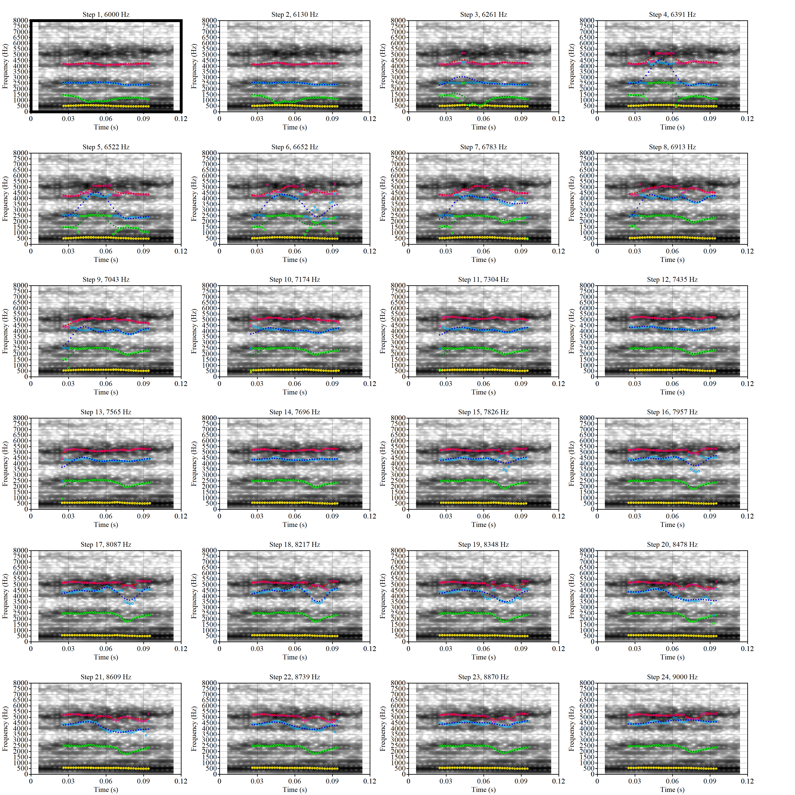
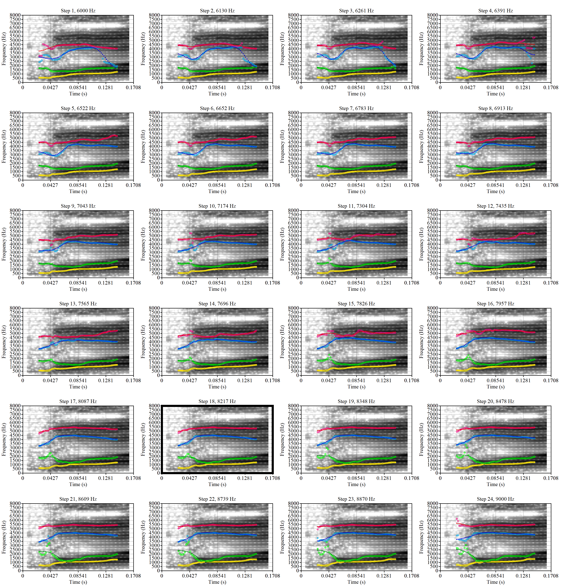
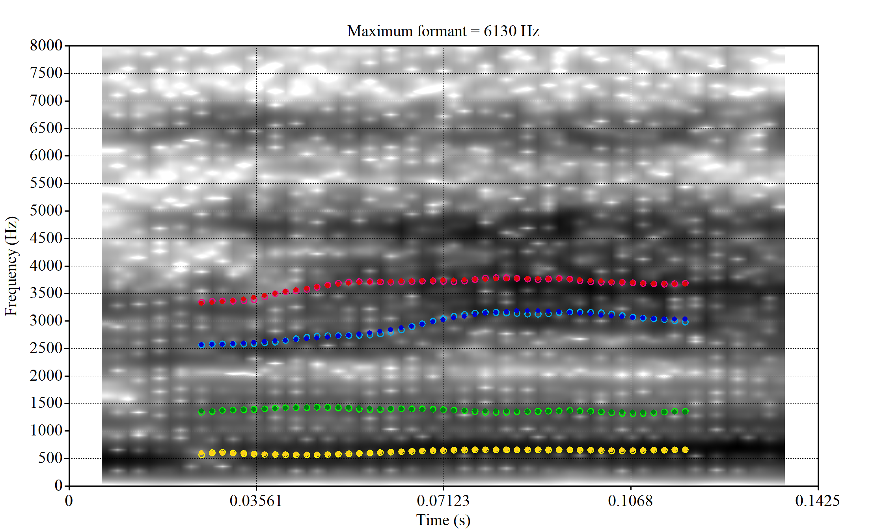
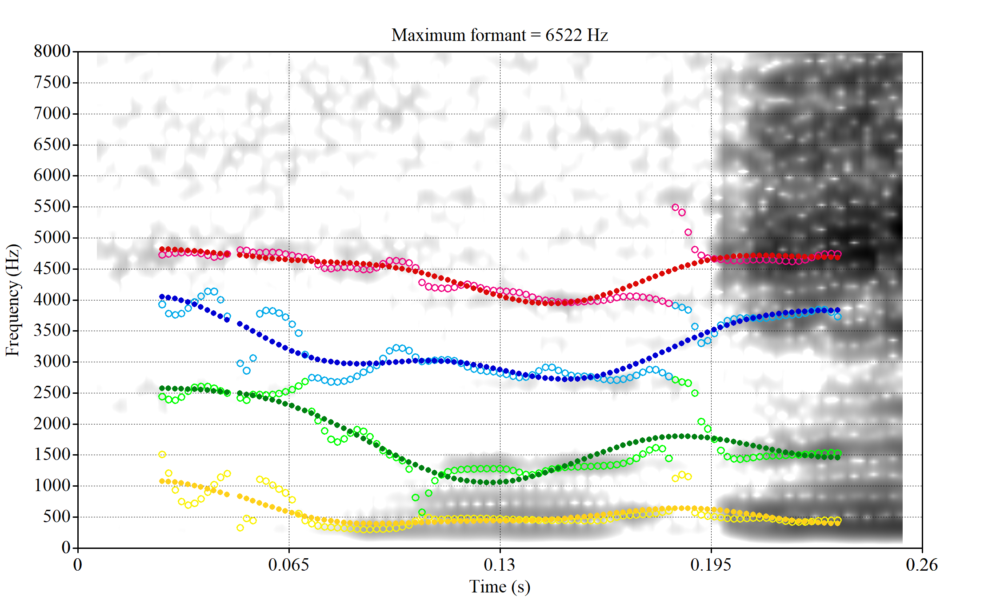

![]()
# Tidyverse and related packages
library(tidyverse)
library(glue)
library(lubridate)
library(ggrepel)
# improved tables
library(kableExtra)
# File path management
library(here)
# nzilbb.labbcat allows access to our LaBB-CAT instance.
library(nzilbb.labbcat)
# nzilbb.vowels provides a series of functions to help with processing vowel
# data.
library(nzilbb.vowels)
# To construct a diagram of the filtering process.
library(DiagrammeR)
# To plot correlations
library(ggcorrplot)
# To load images from file
library(imager)
# We use fasttrackr as part of our workflow for using FastTrack with Praat.
# (Rather than directly using fasttrackr to replace the Praat integration).
library(fasttrackr)
# We use rPraat is used to load midpoint readings.
library(rPraat)
labbcat.url <- 'https://labbcat.canterbury.ac.nz/kids/'
# Set ggplot theme
theme_set(theme_bw())
# Set colours for vowel plots
# These are derived from Tol's rainbow palette, designed
# to be maximally readable for various forms of colour
# blindness (https://personal.sron.nl/~pault/).
vowel_colours <- c(
DRESS = "#777777",
FLEECE = "#882E72",
GOOSE = "#4EB265",
KIT = "#7BAFDE",
LOT = "#DC050C",
TRAP = "#F7F056",
START = "#1965B0",
STRUT = "#F4A736",
THOUGHT = "#72190E",
NURSE = "#E8601C",
FOOT = "#5289C7"
)
# It is sometimes useful for filtering to have a list of all monophthongs.
monophthongs <- c(
"DRESS", "FLEECE", "GOOSE", "KIT", "LOT", "TRAP", "START", "STRUT",
"THOUGHT", "NURSE", "FOOT", "SCHWA"
)
# Set a seed for the random sampling below
set.seed(10)1 Overview
This document sets out the R code used to extract all monophthongs, track formants using the FastTrack plugin for Praat, filter, and normalise.
Formant tracking was carried out using FastTrack in Praat. Instructions to reproduce our formant extraction method are provided below and a validation of the FastTrack settings we used is provided in Section 4.2.3.
Note that we extract all monophthongs from the corpus in this document, while we only analyse the ‘extended short front vowel shift’ in the associated paper. The full complement of monophthongs is necessary for normalisation.
There are a few side-lines in these supplementary materials. For the purposes of the paper, the key features are:
- Section 4.2.2: The code which actually carried out our formant tracking.
- Section 5: Data filtering steps.
- Section 7.4: The normalisation method we use.
2 Packages and renv environment
We load a series of R packages.
We use renv to store and restore the specific versions of packages we use. For more information see https://rstudio.github.io/renv/articles/renv.html. Install renv if you do not have the package. We use R version 4.4.2.
3 LaBB-CAT extraction
Transcripts and audio of story retell tasks were uploaded to a LaBB-CAT instance (Fromont 2012). We extract all monophthong tokens from our LaBB-CAT instance using the nzilbb.labbcat package. The code in the block below will only run successfully if you have access to the LaBB-CAT instance (which you likely do not!). It is provided for documentation purposes.
It is worth noting here that there is a two-stage process where the segment layer is generated by MFA using an American English phonemic dictionary. From this we generate a celexSegment layer which contains the most likely pronunciation from the CELEX dictionary.
To view code click here
# Define the search pattern
pattern <- list(
columns = list(
list(
layers = list(
# We want all vowels in the segment layer. The pattern is a
# regular expression, using the DISC alphabet.
# We will later filter to include only the monophthongs from the
# celexSegment layer.
segment = list(pattern = "[I@EVQU{i#3\\$u123456789]")
)
)
)
)
# Collect matching tokens.
# anchor.confidence.min gives us all automatically aligned tokens.
# We only take tokens from transcripts which have been manually corrected.
matches <- getMatches(
labbcat.url,
pattern = pattern,
page.length = 1000,
anchor.confidence.min = 50,
# only extract transcripts which have been manually corrected.
transcript.expression = expressionFromAttributeValue(
'transcript_phonemic_corrections', 1
)
)
# Tokens: 19446
# Collect relevant information at the transcript level. This includes the
# age of the child when the transcript was recorded, where it was recorded,
# etc.
transcript_attributes <- getTranscriptAttributes(
labbcat.url,
unique(matches$Transcript),
c(
'transcript_cp', 'transcript_age', 'transcript_centre',
'transcript_recording_date'
)
)
# Merge transcript-level information with matches by left join.
matches <- matches %>%
rename(
transcript = Transcript,
participant = Participant
) %>%
left_join(transcript_attributes)
# Collect relevant information at participant level.
participant_attributes <- getParticipantAttributes(
labbcat.url,
unique(matches$participant),
c(
'participant_date_of_birth', 'participant_gender',
'participant_ethnicity', 'participant_home_language'
)
)
# Merge participant-level information with matches by left join.
matches <- matches %>%
left_join(participant_attributes)
# Collect match labels (additional information at the token level)
match_labels <- getMatchLabels(
labbcat.url,
match.ids = matches$MatchId,
layer.ids = c(
"celexSegment", "noise",
"syllable", "orthography",
"celex_frequency", 'corpus_frequency'
)
)
# Collect the segment following each token.
following_seg <- getMatchLabels(
labbcat.url,
matches$MatchId,
layer.ids = c("segment"),
target.offset=1
)
matches <- bind_cols(matches, match_labels, following_seg)
# Use Praat integration to collect pitch information
pitches <- processWithPraat(
labbcat.url,
matches$MatchId, matches$Target.segment.start, matches$Target.segment.end,
window.offset = 0.025,
praatScriptPitch(
get.mean = TRUE,
get.minimum = TRUE,
get.maximum = TRUE,
time.step = 0,
pitch.floor = 150,
max.number.of.candidates = 15,
very.accurate = FALSE,
silence.threshold = 0.03,
voicing.threshold = 0.5,
octave.cost = 0.01,
octave.jump.cost = 0.35,
voiced.unvoiced.cost = 0.35,
pitch.ceiling = 1250, # On the high side, some children can reach almost 2000 Hz when yelling
# https://www.fon.hum.uva.nl/praat/manual/Intro_4_2__Configuring_the_pitch_contour.html
pitch.floor.male = NULL,
voicing.threshold.male = 0.4,
pitch.ceiling.male = NULL,
gender.attribute = "participant_gender",
value.for.male = "M",
sample.points = NULL,
interpolation = "linear",
skip.errors = TRUE
)
)
matches <- bind_cols(matches, pitches) %>% select(-Error)
# Tidy names, generate useful columns, remove unnecessary columns.
matches <- matches %>%
rename(
start = Target.segment.start,
end = Target.segment.end,
word_start = Target.word.start,
word_end = Target.word.end,
age = transcript_age,
dob = participant_date_of_birth,
gender = participant_gender,
collect = transcript_cp,
ethnicity = participant_ethnicity,
home_language = participant_home_language,
text = Text,
word = orthography,
following_segment = Token.plus.1.segment
) %>%
mutate(
# the mfa_vowel variable uses the segment layer and represents the best
# guess of the mfa model given it's available pronunciations.
mfa_vowel = fct_recode(
factor(Target.segment),
FLEECE = "i",
KIT = "I",
DRESS = "E",
TRAP = "{",
START = "#",
LOT = "Q",
THOUGHT = "$",
NURSE = "3",
STRUT = "V",
FOOT = "U",
GOOSE = "u",
SCHWA = "@"
),
# Remove consonants added when converting from mfa segments to celex
# phobemes. This code uses the fact that '[^X]' matches all characters
# _except_ x.
vowel = str_replace(
celexSegment,
"[^iIE{#\\$3QVUu@123456789]",
""
),
# The vowel variable will have some DISC coded diphthongs in it. e.g.
# '8' (= SQUARE)
vowel = fct_recode(
factor(vowel),
FLEECE = "i",
KIT = "I",
DRESS = "E",
TRAP = "{",
START = "#",
LOT = "Q",
THOUGHT = "$",
NURSE = "3",
STRUT = "V",
FOOT = "U",
GOOSE = "u",
SCHWA = "@"
),
stress = case_when(
str_detect(syllable, '".*') ~ '"',
str_detect(syllable, "'.*") ~ "'",
.default = "0"
)
) %>%
select(
-Target.segment, -Corpus, -Line, -LineEnd,
-Before.Match, -After.Match, -Number, -Target.word, -SearchName
)
# Filter non-monophthongs (in celex_vowel layer)
matches <- matches %>%
filter(
vowel %in% monophthongs
) %>%
mutate(
vowel = factor(vowel, levels = monophthongs)
)
# tokens: 16045
# Correct ethnicity error in participant.
matches <- matches %>%
mutate(
ethnicity = if_else(ethnicity == "MÄori", "Māori", ethnicity)
)
# Save data
write_rds(matches, here('data', 'untracked_vowels.rds'))We now load the data extracted from LaBB-CAT in the above block.
vowels <- read_rds(here('data', 'untracked_vowels.rds'))There are 16045 tokens. The column names are:
names(vowels) [1] "transcript" "participant"
[3] "MatchId" "URL"
[5] "text" "word_start"
[7] "word_end" "start"
[9] "end" "collect"
[11] "age" "transcript_centre"
[13] "transcript_recording_date" "dob"
[15] "gender" "ethnicity"
[17] "home_language" "celexSegment"
[19] "noise" "syllable"
[21] "word" "celex_frequency"
[23] "corpus_frequency" "following_segment"
[25] "meanPitch" "minPitch"
[27] "maxPitch" "mfa_vowel"
[29] "vowel" "stress" The important columns to note are:
participantcontains a unique participant identified.MatchIdandURLconnect the each segment with the LaBB-CAT corpus.mfa_vowelindicates the vowel detected by MFA which the segment comes from stored as a Wells lexical set.vowelindicates the best CELEX phoneme to match the segments found by MFA.startandendgive the onset and offset of the segment (seconds).minPitch,maxPitchandmeanPitchgive pitch information for the segment extracted via Praat.following_segmentgives the CELEX DISC code for the following segment.syllableandstresstell us what syllable the segment comes from and whether it is stressed.textandwordgive the word in which the segment appears with punctuation and without, respectively.corpus_frequencyandcelex_frequencygive frequency from the corpus and from CELEX, respectively.word_startandword_endgive the onset and offset of the word which contains the segment (seconds).dob,gender,ethnicity, andhome_languageprovide metadata about the child.collectindicates the collection point at which the segment was recorded (1, 2, 3, or 4).transcript_centreandtranscript_recording_datetells us where and when the transcript was recorded.
We will give more detailed summary information after the filtering and preprocessing steps (Section 6).
4 Formant tracking with FastTrack
FastTrack (Barreda 2021) provides a more robust alternative to the default automatic formant tracking method in Praat (Boersma and Weenink 2024). FastTrack is a Praat plugin which fits a series of alternative formant tracks, fits polynomial models through each alternative track, and decides on a winner on the basis of a series of heuristics applied to both the formant tracks and models.
FastTrack has a series of user-adjustable options. Barreda (2021) recommends that users adjust these options to match their speakers.
Our first approach to formant tracking applied FastTrack using LaBB-CAT’s integration with FastTrack. However, our need to track the formants of very young child speech required us to adjust settings which are unavailable through LaBB-CAT. In particular, we applied hard boundaries for the possible frequency values of formants from some vowel types. Additionally, we needed to examine alternative analyses produced by FastTrack to determine how and why our initial attempts were failing. Consequently, we decided to process the formants by downloading all audio files from LaBB-CAT and applying FastTrack locally.
The path we took may well be useful to other researchers, so we present it in some detail here. We first present our original formant tracking and show what went wrong (Section 4.1). We then set out the method for extracting the required audio, locally processing it, and determining appropriate FastTrack settings (Section 4.2). Finally, we validate the settings we decided on by spot checking 30 tokens from each vowel (Section 4.2.3).
4.1 LaBB-CAT integration
LaBB-CAT integrates with FastTrack and allows control of many of the options for formant extraction. Our initial formant extraction used FastTrack recommendations for speakers less than five foot tall (152cm). This cut off height is significantly taller than the expected height of a five year old in New Zealand. In New Zealand, the median height for five year old boys is 110cm and for five year old girls is 109cm (Te Whatu Ora).
The code below again requires access to our LaBB-CAT instance, and is provided for documentation purposes only. Behind the scenes, this document loads the result of running this code so that subsequent blocks will run.
To view code click here
formants <- processWithPraat(
labbcat.url,
vowels$MatchId, vowels$start, vowels$end,
praatScriptFastTrack(
formants = c(1,2),
sample.points = c(0.5),
lowest.analysis.frequency = 5500,
# Use of NULL here turns off differentiation for male and female speakers.
lowest.analysis.frequency.male = NULL,
highest.analysis.frequency = 7500,
highest.analysis.frequency.male = NULL,
gender.attribute = "participant_gender",
value.for.male = "M",
time.step = 0.002,
tracking.method = "burg",
number.of.formants = 3,
maximum.f1.frequency = 1200,
maximum.f1.bandwidth = NULL,
maximum.f2.bandwidth = NULL,
maximum.f3.bandwidth = NULL,
minimum.f4.frequency = 2900,
enable.rhotic.heuristic = TRUE,
enable.f3.f4.proximity.heuristic = TRUE,
number.of.steps = 24,
number.of.coefficients = 5
),
# Take audio 0.025s either side of token start and end.
window.offset = 0.025
)
vowels <- bind_cols(vowels, formants)
vowels <- vowels %>%
rename(
time = time_0_5,
F1 = f1_time_0_5,
F2 = f2_time_0_5
)
write_rds(vowels, here('data', 'vowels_default_ft.rds'))We’ll now visualise the default formant readings in the vowel space.
First, we define a plotting function.
plot_vs <- function(in_data, vowel_colours, alpha_level = 0.2) {
means <- in_data %>%
group_by(
vowel
) %>%
summarise(
F1 = mean(F1, na.rm=TRUE),
F2 = mean(F2, na.rm=TRUE),
winner = "MEAN"
)
out_plot <- in_data %>%
ggplot(
aes(
x = F2,
y = F1,
colour = vowel
)
) +
geom_point(alpha = alpha_level, size = 1) +
stat_ellipse(level=0.67, linewidth=1) +
geom_point(data = means, size = 4) +
scale_x_reverse(limits = c(4500, 0)) +
scale_y_reverse(limits = c(2000, 0)) +
scale_colour_manual(values=vowel_colours)
out_plot
}We then apply the function:
ft_default_plot <- vowels %>%
plot_vs(vowel_colours=vowel_colours) +
labs(
title = "F1 and F2 for All Monophthongs",
subtitle = "FastTrack Defaults, 1 s.d. ellipses.",
colour = "Vowel"
)
ft_default_plotFigure 1 shows a large number of high-F1 outliers. This is clear at the bottom of the vowel space plot. However, the biggest problem is the width of the ellipses for our high front vowels.
This is clearer if we look at a subset of the vowels. In this case, fleece, dress and trap.
vowels %>%
filter(
vowel %in% c('FLEECE', 'DRESS', 'TRAP')
) %>%
plot_vs(
vowel_colours = vowel_colours,
alpha_level = 0.3
) +
labs(
title = "F1 and F2 for FLEECE, DRESS, and TRAP Monophthongs",
subtitle = "FastTrack Defaults, 1 s.d. ellipses",
colour = "Vowel"
)There is an extreme spread of F2 values for these vowels. The ellipses suggest a majority of the tokens are in sensible places, but there are a very large number of implausible values in the data frame. In particular, none of these tokens should be at the very back of the vowel space.
To determine the origin of these bad values, we looked at a sample of tokens and determine if alternative FastTrack settings would be appropriate. As noted above, this required us to process the data locally.
4.2 Local processing
4.2.1 Determine FastTrack settings
There are two broad categories of setting which we can modify:
- The range of upper frequency limits within which FastTrack generates and compares analyses.
- Hard limits on the mean value of each formant track.
We will look at a sample of analyses of vowel tokens to determine how we should modify our settings in each category. We’ll start the process by making some changes to upper frequency limits on the basis of the plots we have already seen (Figure 1).
The most obvious explanation for the poor results of our formant tracking above is that we have set the maximum frequency too low to capture small children’s speech. To see a particularly clear example of what can happen when the maximum frequency is set too low, look at the following ‘before’ and ‘after’ plots (Figure 3).
In this kind of case, the only place for the second formant to go using the default settings is in the empty(ish) space between, roughly, 1000Hz and 3500Hz.
Figure 1 suggests that the front vowel have a bigger problem here than the others (their expected F2 values are higher, so they should be more likely to run in to this problem).
So we set the following range of upper frequency cut off values for the ‘front’, ‘back’ or ‘other’ vowels:
- ‘Front vowels’ (fleece, dress, nurse, goose, trap, kit): 6000-9000Hz.
- ‘Back vowels’ (lot, thought, foot): 5000-8000Hz.
- ‘Other vowels’ (strut, start, schwa): 5500-8500Hz
For comparison, recall that the original settings were 5500 to 7500Hz for all vowels.
We apply these settings to a random sample of vowel tokens and then determine whether or not there is any evidence that the range needs to be changed and whether the addition of hard limits on formant ranges would enable FastTrack to select a better analysis.
The code block below (folded by default) generates the samples (n=25 for each vowel) and extracts the relevant audio from LaBB-CAT. Again, it requires access to the LaBB-CAT instance.
To view code click here
vowel_types <- vowels$vowel %>% unique()
# This dataframe will contain the samples from each vowel
samples <- tibble(
vowel = vowel_types
)
# Create a function to apply to each vowel type to generate a sample of 25.
create_sample <- function(vowel_type) {
# Create directory to hold the sample.
dir.create(here('praat', vowel_type), recursive = TRUE)
# Create sample.
sample_vowels <- vowels %>%
filter(
vowel == vowel_type
) %>%
slice_sample(n=25)
# Get sound files from LaBB-CAT
sample_files <- getSoundFragments(
labbcat.url,
ids = sample_vowels$transcript,
start.offsets = sample_vowels$start - 0.025,
end.offsets = sample_vowels$end - 0.025,
path = here("praat", vowel_type, "sounds")
)
# Get filename.
sample_vowels <- sample_vowels %>%
mutate(
file = str_extract(sample_files, "[A-Za-z0-9_\\.\\-]*$")
)
# Processing with FastTrack requires file information. This is
# created here using the `fasttrackr` package's `makefileinformation`
# function.
sample_info <- makefileinformation(here('praat', vowel_type))
sample_info <- sample_info %>%
left_join(
sample_vowels %>%
select(file, vowel)
) %>%
select(
-label
) %>%
rename(
label = vowel
) %>%
relocate(number, file, label)
# Write the file information to the relevant folder.
write_csv(sample_info, here('praat', vowel_type, 'file_information.csv'))
# Return the sample.
sample_vowels
}
# Apply function to all vowel types.
samples <- samples %>%
mutate(
sample = map(vowel, create_sample)
)
# We save information about the samples.
write_rds(samples, here('data', 'samples.rds'))In order to process these audio files, we used FastTrack with Praat version 6.1.09. FastTrack does not have version numbers, but was downloaded on the 9th of March, 2023. The version of FastTrack available on that date can be found here. We used the ‘Track folder…’ option visible when Praat is opened.
We used 5 coefficient for prediction, 24 candidate analyses within the limits set, a time step of 0.002 seconds, the Burg tracking method, the dct basis function and mae errors. We enabled the F1 < 1200Hz, F4 > 2900Hz, and F3 and F4 proximity heuristics and turned off the rhotic heuristic.
If you are repeating these steps, make sure to tick the ‘Make images comparing analyses’ box. If you do not, you will be unable to determine whether hard frequency limits might improve your results.
4.2.1.1 Vowel-by-vowel
Working through these samples was a long process. The process, for each vowel, is summarised in the tabs which appear a after a few paragraphs below.
The code folded below loads the formants selected by FastTrack.
To view code click here
# Load the winning values from FastTrack. We read in the `aggregated_data.csv`
# file produced by FastTrack for each vowel type and analysis and the
# `winners.csv` file to tell us which of the analyses tried by FastTrack was
# considered best.
fasttrack_info <- samples %>%
mutate(
ft_data = map(vowel, ~ read_csv(
here('praat', .x, 'processed_data', 'aggregated_data.csv')
)
),
winners = map(vowel, ~ read_csv(here('praat', .x, 'winners.csv')) %>% select(winner))
) %>%
select(vowel, ft_data, winners) %>%
unnest(c(ft_data, winners))
# Fasttrack will ignore files which it cannot fit models to. Usually this is
# because the token is too short. We want to know about these, for the purposes
# of the test below. The following code adds these tokens to the data from
# the samples.
fasttrack_vowels <- samples %>%
select(sample) %>%
unnest(sample) %>%
mutate(
# remove '.wav' from filename. Enables left join below.
file = str_sub(file, end = -5)
) %>%
select(vowel, file, word, start, end, MatchId, URL, noise, meanPitch) %>%
mutate(
token_dur = end - start
) %>%
left_join(fasttrack_info, by = c("vowel", "file")) %>%
mutate(
# if there is no 'winner' value, the token hasn't been tracked by
# fasttrack.
tracked = !is.na(winner)
)In order to plot the results of our local processing, we slightly modify the previous vowel space plotting function. It now includes integers which identify the FastTrack analysis which was selected for the token, with 1 indicating the lowest upper bound tried and 24 indicating the highest.
plot_vs_ft <- function(in_data) {
means <- in_data %>%
group_by(
vowel
) %>%
summarise(
f1 = mean(f1, na.rm=TRUE),
f2 = mean(f2, na.rm=TRUE),
winner = "MEAN"
)
out_plot <- in_data %>%
ggplot(
aes(
x = f2,
y = f1,
colour = vowel,
label = winner
)
) +
geom_text(alpha = 0.8, size = 2) +
stat_ellipse() +
geom_point(data = means, size = 4) +
scale_x_reverse(limits = c(4500, 0)) +
scale_y_reverse(limits = c(2000, 0)) +
scale_colour_manual(values=vowel_colours) +
labs(x = "F2", y = "F1")
out_plot
}We then generate an overall plot:
fasttrack_vowels <- fasttrack_vowels %>%
rename(
f1 = f13,
f2 = f23
)
fasttrack_vowels %>%
plot_vs_ft()
We still have some very wide ellipses. This is not surprising given lower token count (25 for each vowel). We’ll look at these in more detail, vowel-by-vowel, below.
Which analysis tends to win for each vowel type? That is, which of the 24 steps between the minimum frequency and the maximum analysis frequency is the winning analysis? We display this in a histogram:
fasttrack_vowels %>%
ggplot(
aes(
x = winner,
fill = vowel
)
) +
geom_histogram(bins=24)The ‘winner’ values in this plot are the ‘step’ which won. The steps move from the lowest allowable maximum frequency to the highest. We see here that the 1st and 24th steps win more than the other analyses. In such cases, it may be that the true analysis would be found at a more extreme value.
This plot suggests, for instance, that there might be a problem with the thought vowel. The relative majority of thought tokens seem to have the first analysis as the winner. This suggests that perhaps the lower bound needs to be lower. We will examine this further below.
For each vowel, we will plot the winning analyses from the sample in F1/F2 space with a number indicating which of the analyses won. The panel below enables you to switch between vowels. At the bottom of each panel, a decision will be made about the appropriate FastTrack settings for the relevant vowel.
fasttrack_vowels %>%
filter(
tracked,
vowel == "DRESS"
) %>%
plot_vs_ft()We will look at the three tokens with very low F2 and F1, indicated with ‘2’, ‘1’ and ‘1’ in the top right. We’ll also look at the tokens with F1 above 1000Hz.
These analyses are available for view in the project repository. We will talk through a few examples here.
 These are the analyses considered for the token with file name UXX8_Z6244PSW_T4_ON_20211119_OA5SKD2NZQ__96.857-96.977.wav. It is one of the two ’1’s at the top right of Figure 6. The winning analysis, the first analysis, is surrounded by a thick black box. The yellow dots and line indicate F1 and the green indicates F2. We see that the first analysis is collapsing F1 and F2 together and the putative F3 (the blue line) is a more plausible F2. If we look at the alternative analyses, we see that there is a higher frequency analysis which produces a better F1 and F2 (reliably from around the 10th analysis, reading left-to-right and top-to-bottom). As noted above, we can encourage FastTrack towards these alternative analyses by setting a hard limit on F1 and F2 values.
We now look at the token which appears with ‘18’ at the bottom right of Figure (Figure 6).
 This is a token from the word ‘fell’, which comes before a liquid and is, perhaps unsurprisingly, not much like a traditional dress vowel. The analysis picked by FastTrack looks OK.
The token in question, outside the context of the word, is the following:
This kind of case will be filtered out below when we remove all tokens preceding liquids.
Manual inspection of the other cases doesn’t reveal obvious problems.
There were eight tokens which could not be tracked by FastTrack. These were:
# A function to generate summary tables.
untracked_summary <- function(vowel_name) {
fasttrack_vowels %>%
filter(
vowel == vowel_name,
!tracked
) %>%
select(token_dur, meanPitch, word, noise)
}
untracked_summary("DRESS")# A tibble: 8 × 4
token_dur meanPitch word noise
<dbl> <chr> <chr> <chr>
1 0.0552 "300.3791840692593 " helping <NA>
2 0.0533 "339.9560478068988 " went <NA>
3 0.0700 "269.6217297234238 " then <NA>
4 0.0600 "250.88248397525118 " press <NA>
5 0.0408 "277.5504311967466 " went <NA>
6 0.0300 "--undefined-- " remember <NA>
7 0.00825 "--undefined-- " head <NA>
8 0.0400 "607.9970877857937 " then <NA> These were all very short (see left column token_dur for duration in seconds), with no obvious pattern in word or pitch. They did not occur in particularly noisy portions.
Decision: set a lower bound on dress F2 at 1500 and upper bound of 4000.
fasttrack_vowels %>%
filter(
tracked,
vowel == "FLEECE"
) %>%
plot_vs_ft()The majority of these values are not in strange places for a small child’s fleece vowel.
The token outside the ellipse and marked ‘2’ is a classic case of an F2 being fit through empty space:
 In this case, analyses with a higher cut off fix the problem.
A more problematic case is KSGT_QACKW1N6_T1_ON_20210611_KNOT605KHV__48.485-48.706. The winning analysis is:
Here, the F2 line (green) is again, going through empty space. However, it is going through at a value plausible for an F2. It looks like there is not much information in the audio. We enact a bandwidth-based filtering approach below and will check whether this token is excluded by it.
The token outside the ellipse which is labelled ‘5’ is a token of ‘the’ which sounds, on listening, to be an instance of the strut vowel which has been incorrectly categorised in the course of forced alignment. The appearance of this token well outside the ellipse does not indicate a failure of formant tracking.
Finally, the token ILA_T1_SX1LTCO7_SR_30072020__36.435-36.652 is an interesting case where the putative F2 is at a plausible value for a fleece F2, but is too low in the spectrogram. The correct analysis doesn’t appear until the cut off is around 8000Hz. We have no way to avoid this kind of problem. It seems to occur in a small minority of cases in this sample. We will also check this token when we institute a bandwidth-based filtering step below.
The untracked tokens were:
untracked_summary("FLEECE")# A tibble: 3 × 4
token_dur meanPitch word noise
<dbl> <chr> <chr> <chr>
1 0.0600 "305.1243503883205 " see <NA>
2 0.0600 "320.6197420970537 " the <NA>
3 0.0600 "386.0671365348258 " kiwi <NA> Each of these had a very short duration.
Decision: set a lower bound on dress F2 at 1500 and upper bound of 4000.
fasttrack_vowels %>%
filter(
tracked,
vowel == "TRAP"
) %>%
plot_vs_ft()The token with very high F1, marked ‘17’, outside the ellipse, has an acceptable spectrogram. The token outside the ellipse marked ‘5’ is an instance of a token with a bad start time.
 Without manually rechecking all segments, there is no way to avoid this kind of error coming up in some cases.
untracked_summary("TRAP")# A tibble: 1 × 4
token_dur meanPitch word noise
<dbl> <chr> <chr> <chr>
1 0.0400 "276.56177788650103 " that <NA> One very short token was not tracked.
Decision: set a lower bound on F2 of 1200 and an upper bound of 3500.
fasttrack_vowels %>%
filter(
tracked,
vowel == "NURSE"
) %>%
plot_vs_ft()This is a reasonably tight ellipse. Most of the winners look OK.
The token with an F1 above 1000 has some serious problems. But none of the alternative analyses are any better. It may be that a lower cut off would produce a better analysis. If so, we could categorise nurse as an ‘other’ vowel. We won’t do this, but note it as a possible alternative path.
untracked_summary("NURSE")# A tibble: 0 × 4
# ℹ 4 variables: token_dur <dbl>, meanPitch <chr>, word <chr>, noise <chr>All tokens of nurse could be tracked.
Decision: set 1200 as a lower bound for F2 and an upper bound of 3500.
fasttrack_vowels %>%
filter(
tracked,
vowel == "GOOSE"
) %>%
plot_vs_ft()Our goose tokens have a very wide spread.
The token with a very high F1 is KEN_T2_2CDLJ9EQ_SR_02122020__57.264-57.336. Listening on LaBB-CAT reveals that the audio is dominated by the sound of a door closing, yet this does not appear in the noise tier.
untracked_summary("GOOSE")# A tibble: 0 × 4
# ℹ 4 variables: token_dur <dbl>, meanPitch <chr>, word <chr>, noise <chr>All tokens could be tracked.
Decision: set 1000 as a lower bound for F2 and 3500 as the upper bound.
fasttrack_vowels %>%
filter(
tracked,
vowel == "KIT"
) %>%
plot_vs_ft()There are no unambiguous formant tracking errors in this sample.
untracked_summary("KIT")# A tibble: 6 × 4
token_dur meanPitch word noise
<dbl> <chr> <chr> <chr>
1 0.0410 "191.5691322902142 " him <NA>
2 0.0300 "262.7920981535024 " talking <NA>
3 0.0300 "217.92105741536375 " playing <NA>
4 0.0434 "248.4752065829149 " wanted <NA>
5 0.0600 "536.9790927448698 " in <NA>
6 0.0500 "223.86583586381417 " him <NA> All untracked tokens were very short.
Decision: set 1250 as a lower bound for F2 and 3500 as the upper bound.
fasttrack_vowels %>%
filter(
tracked,
vowel == "THOUGHT"
) %>%
plot_vs_ft()The ellipse is in the right generate area of the vowel space. Visual inspection of the winning analyses reveals some common error types.
Many tokens are pre-liquid, and so will be filtered below. For instance, ‘fall’ is frequent in the corpus.
In some cases, we see what looks like F0 being marked as F1. For instance, see KSGT_STWQV47U_T1_ON_20210615_8OUAEYVRYO__108.462-108.596.
Alternative analyses do better with F2, but continue to put F1 somewhere between the actual F0 and F1.
The token with very high F2 is WES_T1_YXFY5YRO_SR_15072020__35.775-35.955. It sounds more like lot.
Decision: set a upper bound on F2 of 2250. Set a lower bound on F1 at 350.
fasttrack_vowels %>%
filter(
tracked,
vowel == "LOT"
) %>%
plot_vs_ft()
There is no obvious systematic error which could be corrected in the winning analyses. When the reading is dubious, it is not clear that there is a better reading available.
The token in the top right marked ‘6’ does sound more like thought when listened to. The winning analyses makes the F2 much higher than it should be at the start of the token but the midpoint is fine.
HAW_T2_X6NPFKXX_SR_156.155-156.307_winner.png looks like it passes through empty space and, when listened to, is barely audible. We will check whether this is filtered out by the bandwidth filter.
untracked_summary("LOT")# A tibble: 7 × 4
token_dur meanPitch word noise
<dbl> <chr> <chr> <chr>
1 0.0400 "217.5338089762647 " was <NA>
2 0.0500 "313.62304379028865 " want <NA>
3 0.0633 "225.72869592968598 " was <NA>
4 0.0672 "260.4524245664765 " want <NA>
5 0.0631 "276.51206183579166 " wanted <NA>
6 0.0693 "283.6773907058475 " what <NA>
7 0.0500 "275.55503820347906 " wan~ <NA> Seven tokens were not trackable due to their length.
Decision: Set an upper bound on F2 of 2500.
fasttrack_vowels %>%
filter(
tracked,
vowel == "FOOT"
) %>%
plot_vs_ft()There are no obvious systematic errors in the winning analyses.
untracked_summary("FOOT")# A tibble: 8 × 4
token_dur meanPitch word noise
<dbl> <chr> <chr> <chr>
1 0.0600 "242.1218152295943 " bushes <NA>
2 0.0676 "247.1594924146921 " looking <NA>
3 0.0300 "--undefined-- " bush <NA>
4 0.0378 "282.90901620255266 " put <NA>
5 0.0300 "--undefined-- " bushes <NA>
6 0.0600 "247.11322455270428 " put <NA>
7 0.0400 "--undefined-- " woods <NA>
8 0.0657 "219.9984549275185 " goodbye <NA> There were eight untrackable tokens in the sample.
fasttrack_vowels %>%
filter(
tracked,
vowel == "START"
) %>%
plot_vs_ft()There is a very wide spread of both F1 and F2 values in this sample. Manual inspection shows a fairly typical range of errors.
The token HAW_T2_BBF9Y0IL_SR__107.098-107.198 shows the kind of problem which can occur when F1 and F2 are very close:
There is no good analysis here, presumably because the real F1 and F2 are both somewhere between 100 and 1500Hz.
One question with start is whether Tama is being produced with start or trap. Are the instances with trap F2 above 2000Hz in this sample all instances of ‘Tama’?
fasttrack_vowels %>%
filter(
tracked,
vowel == "START",
f2 > 2000
) %>%
select(
file, word
)# A tibble: 3 × 2
file word
<chr> <chr>
1 P3NP_WE3NU3LF_T4_ON_20211206_E9IBMMHNC1__118.881-118.991 tama
2 AV6E_5B0GYT5M_T4_ON_20211124_X58LBYV5GE__16.985-17.115 tama
3 AV6E_ZCBCIU5R_T4_ON_20211117_8ZCAOHF2RO__0.105-0.175 tama It may be wise to remove ‘Tama’ tokens if analysing start. This vowel is not analysed in this paper, so we leave this as a note for future projects.
untracked_summary("START")# A tibble: 5 × 4
token_dur meanPitch word noise
<dbl> <chr> <chr> <chr>
1 0.0300 "--undefined-- " after <NA>
2 0.0300 "360.3546169469465 " can't <NA>
3 0.0300 "268.69000388346944 " laughs <NA>
4 0.0700 "267.82770011358997 " tama <NA>
5 0.0400 "254.178174577578 " tama <NA> Five very short tokens were excluded.
Decision: Set lower bound on F2 at 900.
fasttrack_vowels %>%
filter(
tracked,
vowel == "STRUT"
) %>%
plot_vs_ft()There are some extreme outliers here.
The token marked ‘22’ at the left of the image is AV6E_ZCBCIU5R_T1_ON_20210623_ZFICT8NP0J__103.079-103.159 and is an instance of a formant being drawn through empty space. It is likely to be filtered out either by the standard deviation filter or the bandwidth filter. We will check this below.
The very low F1, marked ‘16’ at the top of the plot, is an instance were there is a very faint line which might be the F1 at around 700Hz. The token is HAW_T2_FLAGGED_KXU13BOU_SR__61.462-61.595. None of the alternative analyses seem to pick this up, so it will not be fixed by setting a hard bound on formants. We will check whether it is filtered out at the end of the filtering stages.
Decision: Set lower bound on F2 at 900.
We won’t manually check schwa as it will be filtered out before the full analysis (following previous research on the NZE vowel system, cited throughout the paper).
4.2.2 Apply FastTrack to all tokens
In order to apply the settings we have determined above, we must first extract the audio for each token. This requires all of the sounds to be in a sounds folder and a file_information.csv file which tells FastTrack about each file (in particular, it says which vowel category a sound belongs to so the correct limits can be applied.
The formant bounds determined above are, as a table:
| Vowel | F1 (lower) | F2 (upper) | F2 (lower) | F2 (upper) |
|---|---|---|---|---|
| START | 350 | 1500 | 900 | 3500 |
| THOUGHT | 350 | 1500 | 500 | 2250 |
| TRAP | 350 | 1500 | 1200 | 3500 |
| NURSE | 350 | 1500 | 1200 | 3500 |
| DRESS | 350 | 1500 | 1500 | 4000 |
| FLEECE | 350 | 1500 | 1500 | 4000 |
| KIT | 350 | 1500 | 1250 | 3500 |
| LOT | 350 | 1500 | 500 | 2500 |
| GOOSE | 350 | 1500 | 1000 | 3500 |
| FOOT | 350 | 1500 | 500 | 3500 |
| STRUT | 350 | 1500 | 900 | 3500 |
We will also increase the minimum cut off for the back vowels to 5500Hz rather than 5000Hz.
Note that we set the same bounds for F1 across all vowels and add some additional values beyond those specified in the vowel-by-vowel analysis above (i.e., we fill out the table with default values).
These are applied to the mean formant value of the selected analysis. This means that the midpoint formant reading can fall outside of the bounds we specify. We decided not to attempt to modify the FastTrack code to apply the formant value limits to the midpoint.
Local processing needs to be done for each vowel type. The resulting directory structure is:
- local processing directory.
Frontsounds- Sound files here.
file_information.csv
Backsounds- Sound files here.
file_information.csv
Othersounds- Sound files here.
file_information.csv
The following code block creates this structure and downloads the data.
To view code click here
# It is likely you will want to process these outside of your project directory.
# use the `path_to_local_processing` variable to store the path to your local
# processing directory.
path_to_local_processing <- '/home/jwb/Documents/kids_local_processing/' # Modify this string.
# Establish front, back and mid categories.
vowels <- vowels %>%
mutate(
vowel_type = case_when(
vowel %in% c('FLEECE', 'DRESS', 'NURSE', 'GOOSE', 'TRAP', 'KIT') ~ "Front",
vowel %in% c('LOT', 'THOUGHT', 'FOOT') ~ "Back",
.default = "Other"
)
)
# Create directory structure
for (i in c("Front", "Back", "Other")) {
dir.create(
here(path_to_local_processing, i, "sounds"),
recursive = TRUE
)
}
# Starting nzilbb.labbcat within 'map' doesn't always trigger authentication so we
# call getLayerIds here as a way to ensure we are authenticated.
getLayerIds(labbcat.url)
# Extract audio files.
match_extraction <- vowels %>%
group_by(vowel_type) %>%
nest() %>%
mutate(
extracted_files = map2(
data,
vowel_type,
~ getSoundFragments(
labbcat.url,
ids = .x$transcript,
start.offsets = .x$start - 0.025,
end.offsets = .x$end - 0.025,
path = paste0(path_to_local_processing, .y, "/sounds")
)
)
)
match_extraction <- match_extraction %>%
mutate(
data = map2(
data,
extracted_files,
~ mutate(
.x,
file = str_extract(.y, "[A-Za-z0-9_\\.\\-]*$")
)
),
file_info = map(
vowel_type,
~ makefileinformation(paste0(path_to_local_processing, .x))
)
)
match_extraction <- match_extraction %>%
mutate(
file_info = map2(
file_info,
data,
~ .x %>%
left_join(
.y %>%
select(file, vowel)
) %>%
select(-label) %>%
rename(
label = vowel
) %>%
relocate(number, file, label)
)
)
# save file info
walk2(
match_extraction$file_info,
match_extraction$vowel_type,
~write_csv(
.x,
paste0(
path_to_local_processing,
.y,
"/file_information.csv"
)
)
)
# Need to link each token with its audio file.
token2file <- match_extraction %>%
select(vowel_type, data) %>%
unnest(data) %>%
select(MatchId, vowel_type, file)
write_rds(token2file, here('data', 'token2file.rds'))We now run FastTrack on each vowel type separately as we did in the previous sections to determine the settings to use.
We load the winning formant tracks and take their midpoint with the following code block.
formants <- tibble(
vowel_type = c("Back", "Front", "Other")
)
formants <- formants %>%
mutate(
file_list = map(
vowel_type,
~ list.files(
here(path_to_local_processing, .x, 'formants_winners'),
full.names=T
)
)
) %>%
unnest(file_list)
get_midpoint_values <- function(formant_path) {
f <- formant.read(formant_path)
# find midpoint
f_mid <- round(f$nx/2)
# get f1, f2 and f3 values at midpoint + bandwidths for each
formant_values <- c(
f$frame[[f_mid]]$frequency[1:3],
f$frame[[f_mid]]$bandwidth[1:3]
)
}
# get midpoints
formants <- formants %>%
mutate(
formant_values = map(file_list, get_midpoint_values)
)
formants <- formants %>%
unnest_wider(formant_values, names_sep = "F")
formants <- formants %>%
rename(
F1_50 = formant_valuesF1,
F2_50 = formant_valuesF2,
F3_50 = formant_valuesF3,
F1_band = formant_valuesF4,
F2_band = formant_valuesF5,
F3_band = formant_valuesF6
)
# Load the correspondence between tokens and flies.
token2file <- read_rds(here('data', 'token2file.rds'))
# join file with vowels.
vowels <- vowels %>%
left_join(
token2file
)
formants <- formants %>%
mutate(
# Remove full path.
file = str_extract(file_list, '[A-Za-z0-9_\\.\\-]*\\.Formant$'),
# Change suffix
file = str_replace(file, '_winner_\\.Formant', '\\.wav'),
)
vowels <- vowels %>%
left_join(
formants %>%
select(file, F1_50, F2_50, F3_50, F1_band, F2_band, F3_band)
)
write_rds(vowels, here('data', 'tracked_vowels.rds'))Note that we have extracted F3 measurements as part of our dataset. We don’t use them in the analysis, but they may be useful for other researchers and for post-hoc analysis.
4.2.3 Validate settings
We again take a sample of tokens, and look to see how well the current settings perform. This time, unlike in Section (Section 4.2.1.1), we create a list of tokens to look at from the local processing directory and copy them across to a validation directory within the project folder. This is shared in the project repository.
To view code click here
validation_samples <- vowels %>%
slice_sample(
by = "vowel", n = 25
)
# We save information about which tokens are in the samples.
write_rds(validation_samples, here('data', 'validation_samples.rds'))
# Some code is needed to gather these samples up.
# generate image name.
validation_samples$file[[1]]
str_replace(validation_samples$file[[1]], '\\.wav', '_winner_.png')
# Create location for the validation samples
for (i in unique(vowels$vowel)) {
dir.create(
here('validation', i),
recursive = TRUE
)
}
# transfer image files.
for (i in seq_along(validation_samples$file)) {
file.copy(
from = paste0(
path_to_local_processing,
validation_samples$vowel_type[[i]],
"/images_winners/",
str_replace(validation_samples$file[[i]], '\\.wav', '_winner_.png')
),
to = here(
"validation",
validation_samples$vowel[[i]],
str_replace(validation_samples$file[[i]], '\\.wav', '_winner_.png')
)
)
}We again use a collection of tabs to see the results for each vowel.
Note
In each of the tabs below, you can click on the plots to enlarge them.
plot_validation_images <- function(vowel) {
images <- list.files(here('validation', vowel), full.names = TRUE)
for (image in images) {
to_plot <- load.image(image)
plot(to_plot, main = str_extract(image, '[A-Za-z0-9\\.\\-\\_]*$'))
}
}
plot_validation_images("DRESS")


While there are some errors in the formant tracks above, they are looking good overall. Note again that we are only using F1 and F2 in this project and so do not worry too much about the quality of the F3 readings.
5 Filtering and New Variables
We load the tracked formants.
# Set up vowels as a factor
vowels <- vowels %>%
mutate(
vowel = as.factor(vowel)
)
# Variables with names ending '_count' will be used at the end of the markdown
# to plot the filtering process.
initial_count <- nrow(vowels)
initial_count[1] 16045We output the plot in Figure 1 again on the left and the results of locally processing the tokens on the right.
ft_modified_plot <- vowels %>%
# remove fast track default data.
select(
-F1, -F2
) %>%
# replace with locally tracked values
rename(
F1 = F1_50,
F2 = F2_50
) %>%
plot_vs(vowel_colours=vowel_colours) +
labs(
title = "F1 and F2 for All Monophthongs",
subtitle = "Local processing, 1 s.d. ellipses.",
colour = "Vowel"
)
combined_ft_plot <- ft_default_plot + ft_modified_plot +
plot_layout(guides = 'collect')
combined_ft_plotFigure 17 is not incredibly revealing. However, we do see some desired tightening of the F2 ranges for many of these vowels.
We now move on to a series of filtering steps.
5.1 Demographic Factors
We remove speakers who do not have English amongst their home languages.
The possible values for home_language are: English, Indian, Samoan, Hindi, English/Samoan, Tagalog/English, Gujarati, English/understands Māori and Samoan, Māori/English, Russian, Japanese, English?, Malayalam. We select those values which include English.
vowels <- vowels %>%
filter(
str_detect(home_language, "English")
)
language_count <- nrow(vowels)5.2 Linguistic Factors: Stress, Stopwords, Duration and Following Environment
Rather than filtering the bulk of our data as in (Brand et al. 2021), we create a series of variables which are related to systematic errors in formant tracking and which which can be incorporated into our models.
For instance, instead of removing all stop words or unstressed variables, we will allow for the effect of these linguistic phenomena to be controlled in our models.
We do this because data is at a premium in this study. We have very low token counts for many of the children in the corpus as compared with corpora of adult speech. In large adult corpora it is possible to be more relaxed about removing tokens.
We track unstressed vowels, but remove tokens of schwa and tokens from the words “hana”, “hanas”, and “hana’s” as they are variably produced with Māori pronunciation (more like start) or as in “Hannah” (trap).
vowels <- vowels %>%
mutate(
stressed = stress != "0"
) %>%
filter(
!vowel %in% c("SCHWA", "FOOT"),
!word %in% c("hana", "hanas", "hana's")
) %>%
mutate(
vowel = droplevels(vowel)
)
word_count <- nrow(vowels)
word_count[1] 11841We remove tokens without orthography and words containing hesitations. We create a variable to indicate whether a word is a stop word.
vowels <- vowels %>%
filter(
!is.na(word),
!str_detect(word, "~")
)
stopwords <- c(
# List from Brand 2021.
'a', 'ah', 'ahh', 'am', 'an', 'and', 'are', "aren't", 'as', 'at',
'aw', 'because', 'but', 'could', 'do', "don't", 'eh', 'for', 'from', 'gonna',
'had', 'has', 'have', 'he', "he's", 'her', 'high', 'him', 'huh', 'i', "i'll",
"i'm", "i've", "i'd", 'in', 'into', 'is', 'it', "it's", 'its', 'just', 'mean',
'my', 'nah', 'not', 'of', 'oh', 'on', 'or', 'our', 'says', 'she', "she's",
'should', 'so', 'than', 'that', "that's", 'the', 'them', 'there', "there's",
'they', 'this', 'to', 'uh', 'um', 'up', 'was', "wasn't", 'we', 'were', 'what',
'when', 'which', 'who', 'with', 'would', 'yeah', 'you', "you've",
# Additional identified stop words.
"then", "me", "too", "his", "off", "onto", "can't", "can", "cos", "said",
"where")
vowels <- vowels %>%
mutate(
stopword = word %in% stopwords
)
na_word_count <- nrow(vowels)
na_word_count[1] 11827We create a variable to track following segment category and remove tokens preceding liquids.
vowels <- vowels %>%
mutate(
following_segment_category = fct_collapse(
fct_na_value_to_level(as_factor(following_segment)),
labial = c('m', 'p', 'b', 'f', 'w'),
velar = c('k', 'g', 'N'),
liquid = c('r', 'l'),
final = c(NA),
other_level = "other"
)
)
vowels <- vowels %>%
filter(
following_segment_category != 'liquid'
)
liquid_count <- nrow(vowels)
liquid_count[1] 111005.3 Formant Tracking Errors
We filter out untracked tokens. These are typically untracked due to being too short for FastTrack to function. Examples of this were shown above in Section 4.2.1.1.
vowels <- vowels %>%
filter(
!is.na(F1_50)
)
na_count <- nrow(vowels)
na_count[1] 9285Tokens were annotated for background noise. We remove any token which falls in an identified noisy section of audio.
vowels <- vowels %>%
filter(
is.na(noise)
)
noise_count <- nrow(vowels)
noise_count[1] 9162We now carry out a bandwidth-based filtering step. The bandwidth represents the span of frequencies with amplitude within +- 3dB of the identified peak. This is particularly important in situations where a non-existent formant is picked out. We’ve seen a couple of examples of this in our initial determination of FastTrack settings and in our validation of our formant tracking settings ( again, see Section 4.2.1.1). In cases, as in fleece tokens with a very high actual F2, we sometimes end up with a putative F2 being traced through the more-or-less empty space in the spectrogram between F1 and the (very high) F2. In cases like this, the formant bandwidth will be very high. On the other hand, very very small bandwidths are likely when certain kinds of noise are being tracked rather than speech.
First, let’s look at the distribution of bandwidths for F1 and F2.
vowels %>%
select(
-F3_band
) %>%
pivot_longer(
cols = contains('_band'),
values_to = 'bandwidth',
names_to = 'formant_type'
) %>%
mutate(
formant_type = str_replace(formant_type, '_band', '')
) %>%
ggplot(
aes(
x = bandwidth,
colour = formant_type
)
) +
geom_freqpoly(linewidth=1, stat="density") +
xlim(xlim=c(0, 2000)) +
labs(
title = "Formant Bandwidths"
)These have very large right tails, along with a sizable number of tokens with very low bandwidths (although this is harder to see).
Let’s look at some examples. First, we define some variables which contain tokens with bandwidth above 500Hz (high bandwidth) and tokens with bandwidth below 10Hz (low bandwidth).
# A subsequent fix to vowel filtering means that this block no longer produces
# the examples we look at below. It remains here to show the code which
# originally generated the sample.
set.seed(500)
high_f1_bandwidth <- vowels %>%
filter(
F1_band > 500
) %>%
slice_sample(n=10)
high_f2_bandwidth <- vowels %>%
filter(
F2_band > 500
) %>%
slice_sample(n=10)
low_f1_bandwidth <- vowels %>%
filter(
F1_band < 10
) %>%
slice_sample(n=10)
low_f2_bandwidth <- vowels %>%
filter(
F2_band < 10
) %>%
slice_sample(n=10)We now load some example images. The following block copies across the relevant images from the local processing folder (and so requires access to this, which the reader is unlikely to have).
band_groups <- c("high_f1", "high_f2", "low_f1", "low_f2")
# Create location for the validation samples
for (i in band_groups) {
dir.create(
here('bandwidth', i),
recursive = TRUE
)
}
# transfer image files.
transfer_images <- function(in_data, in_group) {
for (i in seq_along(in_data$file)) {
file.copy(
from = paste0(
path_to_local_processing,
in_data$vowel_type[[i]],
"/images_winners/",
str_replace(in_data$file[[i]], '\\.wav', '_winner_.png')
),
to = here(
"bandwidth",
in_group,
str_replace(in_data$file[[i]], '\\.wav', '_winner_.png')
)
)
}
}
transfer_images(high_f1_bandwidth, "high_f1")
transfer_images(high_f2_bandwidth, "high_f2")
transfer_images(low_f1_bandwidth, "low_f1")
transfer_images(low_f2_bandwidth, "low_f2")The identified high f1 bandwidth tokens are plotted by the following code block.
plot_winner <- function(vowel_type, in_group, audio_filename, bandwidth) {
to_plot <- load.image(
here(
'bandwidth',
in_group,
str_replace(audio_filename, '\\.wav', '_winner_.png')
)
)
plot(
to_plot,
main = paste(
'Bandwidth:', bandwidth, 'Hz\n',
vowel_type, str_extract(audio_filename, '[A-Za-z0-9\\.\\-\\_]*$')
),
axes = FALSE
)
}
# Collecting a previous sample (see comment on code block 2 above)
high_files <- tibble(
filename = list.files(
here('bandwidth', 'high_f1')
)
)
high_files <- high_files %>%
mutate(
transcript = str_extract(filename, "([A-Z0-9_]*)__", group=1),
start = as.numeric(
str_extract(filename, "([A-Z0-9_]*)__([0-9\\.]*)", group=2)
),
bandwidth = map2(
transcript, start,
\(t, s) {
vowels %>%
filter(
transcript == paste0(t, '.slt'),
between(start, s-0.05, s+0.05)
) %>%
select(vowel, vowel_type, F1_band)
}
)
) %>%
unnest_wider(bandwidth)
for (i in seq_along(high_files$filename)) {
plot_winner(
high_files$vowel_type[[i]],
'high_f1',
high_files$filename[[i]],
round(high_files$F1_band[[i]])
)
}
When looking at these it is important to note that the formant and bandwidth readings we are using are midpoint readings.
These are high bandwidth tokens for F1. We are looking to confirm that these are indeed bad readings. We are looking at the yellow lines at the midpoint.
There are a few different error types here. In some cases, we have very wide, thick, black bars in which it is difficult to discern F1 as distinct from F0 and F2 (e.g. AV6E_2CDLJ9EQ_...). We also have the opposite problem (wide empty spaces) in other tokens (HAW_T1_BBF9Y0IL... and HAW_T1_BBF9Y0IL...). There are other, quite chaotic tokens (e.g. P3NP_WE3NU3LF_T4...). Some tokens look OK, such as HAW_T2_JPEJCXCI_.... However, the bandwidth on this token is in fact higher than that of tokens which look bad (e.g. ECA5_TKAB8B7Y...). This is likely unavoidable (as is often the case when filtering data).
We now look at high bandwidth F2 tokens (the green lines):
# Collecting a previous sample (see comment on code block 2 above)
high_f2_files <- tibble(
filename = list.files(
here('bandwidth', 'high_f2')
)
)
high_f2_files <- high_f2_files %>%
mutate(
transcript = str_extract(filename, "([A-Z0-9_]*)__", group=1),
start = as.numeric(
str_extract(filename, "([A-Z0-9_]*)__([0-9\\.]*)", group=2)
),
bandwidth = map2(
transcript, start,
\(t, s) {
vowels %>%
filter(
transcript == paste0(t, '.slt'),
between(start, s-0.05, s+0.05)
) %>%
select(vowel, vowel_type, F2_band)
}
)
) %>%
unnest_wider(bandwidth)
for (i in seq_along(high_f2_files$filename)) {
plot_winner(
high_f2_files$vowel_type[[i]],
'high_f2',
high_f2_files$filename[[i]],
round(high_f2_files$F2_band[[i]])
)
}
It looks like 500Hz is too low for our F2 cut off. The obvious errors being picked up here (including, for instance, SFH9_TYZA8SPF...) seem to have bandwidths above 1000Hz.
What happens at the other side of the distribution? i.e. what do tokens with very low bandwidth look like? First we look at F1:
# Collecting a previous sample (see comment on code block 2 above)
low_files <- tibble(
filename = list.files(
here('bandwidth', 'low_f1')
)
)
low_files <- low_files %>%
mutate(
transcript = str_extract(filename, "([A-Z0-9_]*)__", group=1),
start = as.numeric(
str_extract(filename, "([A-Z0-9_]*)__([0-9\\.]*)", group=2)
),
bandwidth = map2(
transcript, start,
\(t, s) {
vowels %>%
filter(
transcript == paste0(t, '.slt'),
between(start, s-0.05, s+0.05)
) %>%
select(vowel, vowel_type, F1_band)
}
)
) %>%
unnest_wider(bandwidth)
for (i in seq_along(low_files$filename)) {
plot_winner(
low_files$vowel_type[[i]],
'low_f1',
low_files$filename[[i]],
round(low_files$F1_band[[i]])
)
}

There’s nothing obviously wrong with these low bandwidth F1 tokens visually with the exception of F5CI_S29WR30F....
And now F2:
# Collecting a previous sample (see comment on code block 2 above)
low_f2_files <- tibble(
filename = list.files(
here('bandwidth', 'low_f2')
)
)
low_f2_files <- low_f2_files %>%
mutate(
transcript = str_extract(filename, "([A-Z0-9_]*)__", group=1),
start = as.numeric(
str_extract(filename, "([A-Z0-9_]*)__([0-9\\.]*)", group=2)
),
bandwidth = map2(
transcript, start,
\(t, s) {
vowels %>%
filter(
transcript == paste0(t, '.slt'),
between(start, s-0.05, s+0.05)
) %>%
select(vowel, vowel_type, F2_band)
}
)
) %>%
unnest_wider(bandwidth)
for (i in seq_along(low_f2_files$filename)) {
plot_winner(
low_f2_files$vowel_type[[i]],
'low_f2',
low_f2_files$filename[[i]],
round(low_f2_files$F2_band[[i]])
)
}
The token AV6E_2CDLJ9EQ is alarming. There seems to be a non-speech sound happening and not much otherwise.
In the absence of a principled cut off point, we will simply track whether the bandwidth of a token is in the top 10% of the distribution for F1, F2, and F3 bandwidths.
The cut off values are:
vowels %>%
summarise(
F1_band = quantile(F1_band, 0.90),
F2_band = quantile(F2_band, 0.90),
F3_band = quantile(F3_band, 0.90)
) F1_band F2_band F3_band
1 464.8311 830.4386 958.0839We make three variables to track this. In order to keep good F1 readings, even if the F2 reading is bad, we will separate our data into F1 and F2 datasets at the analysis stage. At that point, we will filter out the tokens with high bandwidths. But it is important at this stage to quantify how many tokens will be lost.
vowels <- vowels %>%
mutate(
high_f1_bandwidth = F1_band > quantile(F1_band, 0.90),
high_f2_bandwidth = F2_band > quantile(F2_band, 0.90),
high_f3_bandwidth = F3_band > quantile(F3_band, 0.90)
)
f1_band_count <- nrow(filter(vowels, !high_f1_bandwidth))
f2_band_count <- nrow(filter(vowels, !high_f2_bandwidth))
# If these counts aren't the same, something has gone wrong!
f1_band_count == f2_band_count[1] TRUESince we are taking the top 10% of tokens, each of these variables identifies 917 tokens.
We remove very long tokens (with 2.5 standard deviations as our limit, within vowel)
vowels <- vowels %>%
mutate(
duration = end - start,
) %>%
group_by(vowel) %>%
mutate(
duration_s = scale(duration)[,1]
) %>%
filter(
duration_s < 2.5
) %>%
ungroup()
length_count <- nrow(vowels)Phonetic research which deploys automated formant tracking often filters out tokens above or below 2.5 standard deviations from the mean within speaker. This is not possible for us, as there are not enough tokens per speaker. The distribution of tokens for each speaker and collection point is as follows:
vowels %>%
group_by(participant, collect) %>%
count(vowel) %>%
ggplot(
aes(
x = n,
colour = vowel
)
) +
geom_freqpoly(bins = 15)Instead of taking each speaker individually, we will work out standard deviations within age bins.
We use three month bins, starting from 46-48 months, and ending with 61 months and above.
vowels <- vowels %>%
mutate(
age_bin = case_when(
between(age, 46, 48) ~ "46-48",
between(age, 49, 51) ~ "49-51",
between(age, 52, 54) ~ "52-54",
between(age, 55, 57) ~ "55-57",
between(age, 58, 60) ~ "58-60",
between(age, 61, 70) ~ "61+"
)
)We also track a standard deviation limit for a set of ‘age bins’. Because speakers do not have many tokens each, we apply sd filtering at the level of age bins. We will use a cut off of 2 standard deviations.
sd_var <- function(in_data, sd_limit = 2.5) {
vowels_all_summary <- in_data %>%
# Remove tokens at +/- sd limit (default 2.5 sd)
group_by(age_bin, vowel) %>%
summarise(
#calculate the summary statistics required for the outlier removal.
n = n(),
mean_F1_50 = mean(F1_50, na.rm = TRUE),
mean_F2_50 = mean(F2_50, na.rm = TRUE),
mean_F3_50 = mean(F3_50, na.rm = TRUE),
sd_F1_50 = sd(F1_50, na.rm = TRUE),
sd_F2_50 = sd(F2_50, na.rm = TRUE),
sd_F3_50 = sd(F3_50, na.rm = TRUE),
# Calculate cut off values.
max_F1_50 = mean(F1_50) + sd_limit*(sd(F1_50)),
min_F1_50 = mean(F1_50) - sd_limit*(sd(F1_50)),
max_F2_50 = mean(F2_50) + sd_limit*(sd(F2_50)),
min_F2_50 = mean(F2_50) - sd_limit*(sd(F2_50)),
max_F3_50 = mean(F3_50) + sd_limit*(sd(F3_50)),
min_F3_50 = mean(F3_50) - sd_limit*(sd(F3_50))
)
#this is the main outlier filtering step.
out_data <- in_data %>%
left_join(vowels_all_summary) %>%
mutate(
F1_outlier = ifelse(
F1_50 > min_F1_50 &
F1_50 < max_F1_50,
FALSE,
TRUE
),
F2_outlier = ifelse(
F2_50 > min_F2_50 &
F2_50 < max_F2_50,
FALSE,
TRUE
),
F3_outlier = ifelse(
F3_50 > min_F3_50 &
F3_50 < max_F3_50,
FALSE,
TRUE
)
) %>%
ungroup() %>%
select(
-c(
"mean_F1_50", "mean_F2_50", "mean_F3_50",
"sd_F1_50", "sd_F2_50", "sd_F3_50",
"max_F1_50", "min_F1_50",
"max_F2_50", "min_F2_50",
"max_F3_50", "min_F3_50"
)
)
}We apply the fucntion to generate the outlier columns.
vowels <- sd_var(vowels, sd_limit = 2)We check that this function works by looking at the distribution of dress F1 in each age bin.
vowels %>%
filter(
vowel == "DRESS"
) %>%
ggplot(
aes(
x = F1_50,
fill = F1_outlier
)
) +
geom_histogram() +
facet_grid(~ age_bin)This looks about right. Most values identified appear on the right tail of the distributions.
Now we look at F2:
vowels %>%
filter(
vowel == "DRESS"
) %>%
ggplot(
aes(
x = F2_50,
fill = F2_outlier
)
) +
geom_histogram() +
facet_grid(~ age_bin)Here, the identified values tend to be on the left tail of the distribution.
We quantify how many outliers are identified. We also exclude high bandwidth tokens here, for the purpose of quantifying the filtering process below.
f1_sd_count <- nrow(
vowels %>%
filter(!high_f1_bandwidth, !F1_outlier)
)
f2_sd_count <- nrow(
vowels %>%
filter(!high_f2_bandwidth, !F2_outlier)
)
f3_sd_count <- nrow(
vowels %>%
filter(!high_f3_bandwidth, !F3_outlier)
)There are 1144 F1 outliers detected, 1208 F2 outliers, and 1221 F3 outliers.
We now track vowels with high F0. Sometimes, F0 sits on top of F1 and makes it hard to distinguish between the two.
Let’s look at the distribution of F0.
vowels <- vowels %>%
mutate(
meanPitch = as.numeric(meanPitch)
)
vowels %>%
select(
F1_50, F2_50, meanPitch
) %>%
pivot_longer(
cols = c("F1_50", "F2_50", "meanPitch"),
names_to = "type",
values_to = "value"
) %>%
ggplot(
aes(
x = value,
colour = type
)
) +
geom_freqpoly()As expected, there’s a substantial overlap between the F0 and F1 distribution.
We create a variable to track the top 10% of tokens by F0.1
vowels <- vowels %>%
mutate(
high_pitch = meanPitch > quantile(vowels$meanPitch, 0.90, na.rm = T)
)Finally, we filter out very extreme F1 values.
vowels <- vowels %>%
filter(F1_50 < 1500 & F1_50 > 350)
extreme_count <- nrow(vowels)
# 9289
f1_extreme_count <- f1_sd_count - (na_count - extreme_count)
f2_extreme_count <- f2_sd_count - (na_count - extreme_count)We’re left with 8752 tokens.
5.4 Check Previously Identified Tokens
We identified four tokens to check on in Section 4.2.3.
vowels %>%
filter(
file %in% c(
"UXX8_Z6244PSW_T4_ON_20211119_OA5SKD2NZQ__96.857-96.977.wav",
"ILA_T1_SX1LTCO7_SR_30072020__36.435-36.652.wav",
"AV6E_ZCBCIU5R_T1_ON_20210623_ZFICT8NP0J__103.079-103.159.wav",
"HAW_T2_FLAGGED_KXU13BOU_SR__61.462-61.595.wav"
)
) %>%
select(
transcript, participant, collect, F1_50, F2_50, noise,
contains('outlier'), contains('band')
) %>%
knitr::kable() %>%
scroll_box(width="100%")| transcript | participant | collect | F1_50 | F2_50 | noise | F1_outlier | F2_outlier | F3_outlier | F1_band | F2_band | F3_band | high_f1_bandwidth | high_f2_bandwidth | high_f3_bandwidth |
|---|---|---|---|---|---|---|---|---|---|---|---|---|---|---|
| ILA_T1_SX1LTCO7_SR_30072020.slt | EC0814-Child | 1 | 488.6436 | 2689.111 | NA | FALSE | FALSE | FALSE | 134.71702 | 1411.7616 | 221.74079 | FALSE | TRUE | FALSE |
| AV6E_ZCBCIU5R_T1_ON_20210623_ZFICT8NP0J.slt | EC0908-Child | 3 | 570.1251 | 3227.628 | NA | FALSE | TRUE | FALSE | 68.52033 | 1326.2182 | 54.15759 | FALSE | TRUE | FALSE |
| UXX8_Z6244PSW_T4_ON_20211119_OA5SKD2NZQ.slt | EC1809-Child | 4 | 595.7813 | 2539.921 | NA | FALSE | FALSE | FALSE | 117.86033 | 225.0453 | 603.55658 | FALSE | FALSE | FALSE |
The token HAW_T2_FLAGGED_KXU13BOU_SR__61.462-61.595.wav has been filtered out by one of the filtering steps above so there is no need to check.
ILA_T1_SX1LTCO7_SR_30072020.slt and AV6E_ZCBCIU5R_T1_ON_20210623_ZFICT8NP0J.slt have been correctly identified as having very high F2 bandwidth.
The token UXX8_Z6244PSW_T4_ON_20211119_OA5SKD2NZQ__96.857-96.977.wav has correctly been shifted up in F2 from the FastTrack defaults (see Section 4.2.3).
6 Interim Data Description
We now give a description of the data before normalisation.
6.1 Vowel Space
First, a simple vowel space plot:
vowels %>%
relocate(
participant, vowel, F1_50, F2_50
) %>%
plot_vowel_space(
vowel_colours = vowel_colours,
means_only=FALSE,
facet=FALSE,
ellipse=TRUE,
point_alpha=0.2
) +
labs(
title = "Raw Formant Values After Filtering"
)How many tokens do we have for each of these vowels?
vowels %>%
count(vowel) %>%
arrange(desc(n)) %>%
knitr::kable() | vowel | n |
|---|---|
| KIT | 1945 |
| FLEECE | 1202 |
| STRUT | 1033 |
| DRESS | 1015 |
| TRAP | 996 |
| LOT | 762 |
| START | 614 |
| GOOSE | 483 |
| NURSE | 463 |
| THOUGHT | 239 |
6.2 Participant Level Summary
We have 132 participants.
How many collections points do the participants have?
participants_collect <- vowels %>%
group_by(participant) %>%
summarise(
collection_points = n_distinct(collect)
) %>%
group_by(collection_points) %>%
summarise(n_participants = n())
participants_collect %>%
knitr::kable()| collection_points | n_participants |
|---|---|
| 1 | 51 |
| 2 | 60 |
| 3 | 19 |
| 4 | 2 |
We have 19 participants at 3 collection points, with almost none at 4 collection points, and 51 and 60 each at collection points 1 and 2.
The youngest speaker in our data is 3.9 years old, and the oldest is 5.4, with a range of 18 months.
We look at the gender balance by participant and by token.
participants_data <- vowels %>%
group_by(participant) %>%
summarise(
gender = first(gender),
ethnicity = first(ethnicity),
home_language = first(home_language),
dob = first(dob)
)
participants_data %>%
ggplot(
aes(
x = gender
)
) +
geom_histogram(stat="count") +
labs(title = "Participants by gender", x = "Gender")There are 63 female and 69 male speakers.
At the level of tokens, the gender balance is:
vowels %>%
ggplot(
aes(
x = gender
)
) +
geom_histogram(stat="count") +
labs(title = "Tokens by gender", x = "Gender")At the token level, there are slightly more available from female speakers than male.
We also have ethnicity and home language information.
participants_data %>%
ggplot(
aes(
x = ethnicity
)
) +
geom_histogram(stat="count") +
labs(title = "Participants by ethnicity", x = "Ethnicity")
Dominance by NZ Europeans. Not too surprising given the demographics of Christchurch, New Zealand.
participants_data %>%
ggplot(
aes(
x = home_language
)
) +
geom_histogram(stat="count") +
labs(title = "Participants by home language", x = "Home language") +
theme(
axis.text.x = element_text(angle = 90)
)
We decided above to filter by English being one of the particpiants home languages.
Finally, the distribution of birth dates:
participants_data %>%
mutate(
month_year = ym(str_sub(dob, start = 1L, end = -4L))
) %>%
ggplot(
aes(
x = month_year
)
) +
geom_histogram(stat="count") +
labs(title = "Participants by date of birth", x = "Birth date") +
theme(
axis.text.x = element_text(angle = 90)
)6.3 Centre Level Summary
How is our data distributed across centres?
centres_data <- vowels %>%
group_by(transcript_centre) %>%
summarise(tokens=n(), participants = n_distinct(participant)) %>%
arrange(desc(participants))
centres_data %>%
knitr::kable()| transcript_centre | tokens | participants |
|---|---|---|
| SOU | 1300 | 21 |
| WES | 1134 | 20 |
| HAW | 1065 | 18 |
| KEN | 957 | 10 |
| AVO | 717 | 9 |
| MAT | 748 | 9 |
| HAR | 932 | 8 |
| LYT | 567 | 8 |
| RUT | 454 | 6 |
| MAI | 137 | 4 |
| TRE | 199 | 4 |
| BUS | 65 | 3 |
| HOR | 70 | 3 |
| ILA | 168 | 3 |
| HEI | 90 | 2 |
| NOR | 86 | 2 |
| KIN | 17 | 1 |
| SUM | 46 | 1 |
We have 4 centres with 10 or more participants and 18 centres overall.
We can depict this:
centres_data %>%
ggplot(
aes(
x = transcript_centre,
y = tokens
)
) +
geom_col() +
labs(x = "Centre")6.4 Tables
How many tokens are stopwords or unstressed?
vowels %>%
count(stopword) %>%
knitr::kable()| stopword | n |
|---|---|
| FALSE | 4204 |
| TRUE | 4548 |
Unstressed?
vowels %>%
count(stressed) %>%
knitr::kable()| stressed | n |
|---|---|
| FALSE | 1153 |
| TRUE | 7599 |
What range of ethnicity identifications?
participants_data %>%
count(ethnicity) %>%
knitr::kable()| ethnicity | n |
|---|---|
| Asian | 6 |
| Māori | 19 |
| NZ European | 101 |
| Other | 4 |
| Pasifika | 2 |
When were the participants born?
participants_data %>%
pull(dob) %>%
ymd() %>%
summary() Min. 1st Qu. Median Mean 3rd Qu. Max.
"2015-01-11" "2016-03-16" "2016-09-25" "2016-08-17" "2017-01-01" "2017-07-06" What about the distribution of ages at collection point?
pc_data <- vowels %>%
group_by(participant, collect) %>%
summarise(
gender = first(gender),
ethnicity = first(ethnicity),
home_language = first(home_language),
dob = first(dob),
age = first(age)
)
pc_data %>%
pull(age) %>%
summary() Min. 1st Qu. Median Mean 3rd Qu. Max.
47.00 50.00 54.00 53.88 57.00 65.00 6.4.1 Data density
In the paper, we make claims about the difference in the ‘density’ of the transcripts. i.e., we talk about the difference in the number of tokens-per-minute in adult speech (in this case, QuakeBox data shared via the nzilbb.labbcat function) and child speech.
First, what is the range of tokens-per-minute in the (adult) QuakeBox corpus?
qb_vowels %>%
group_by(
speaker
) %>%
summarise(
duration = max(time) / 60,
tokens = n()
) %>%
mutate(
tokens_per_minute = tokens / duration
) %>%
pull(tokens_per_minute) %>%
summary() Min. 1st Qu. Median Mean 3rd Qu. Max.
14.02 30.95 33.79 34.20 37.32 51.12 What is the range of tokens per minute in our preschool corpus?
vowels %>%
group_by(
participant, collect
) %>%
summarise(
duration = max(start) / 60,
tokens = n(),
.groups = "keep"
) %>%
mutate(
tokens_per_minute = tokens / duration
) %>%
pull(tokens_per_minute) %>%
summary() Min. 1st Qu. Median Mean 3rd Qu. Max.
0.928 12.011 21.792 23.524 33.050 85.355 6.5 Filtering Flow Chart
# Flow chart generated using the DiagrammeR package.
flow_chart <- mermaid(
diagram = glue("
graph TB
A(Extract data from LaBB-CAT: {initial_count} tokens) -->
B(Home language: {language_count} tokens)
B --> C(FOOT, SCHWA and HANA: {word_count} tokens)
C --> D(Hesitations, and missing words: {na_word_count} tokens)
D --> E(Preceeding liquids: {liquid_count} tokens)
E --> F(FastTrack errors: {na_count} tokens)
F --> Q(Noisy tokens: {noise_count} tokens)
Q --> M(Long tokens: {length_count} tokens)
M --> G(F1: high bandwidth: {f1_band_count} tokens)
M --> H(F2: high bandwidth: {f2_band_count} tokens)
G --> I(F1: SD filter: {f1_sd_count} tokens)
H --> J(F2: SD filter: {f2_sd_count} tokens)
I --> K(F1: extremes: {f1_extreme_count} tokens)
J --> L(F2: extremes: {f2_extreme_count} tokens)
"),
width = 800
)
flow_chart7 Normalisation
We investigated multiple normalisation methods. The two used in the paper are Lobanov 2.0 on the full vowel space with imputation and Lobanov 2.0 on a subset of the data which allowed normalisation without imputation.
We also investigated the use of two log-mean approaches. We do not use these in the paper, but add them to these supplementary materials as they may be useful for other researchers.
7.1 Lobanov 2.0 (top 5 vowels)
Lobanov 2.0 requires us to estimate means for each vowel type and a standard deviation. In Brand et al. 2021, 5 tokens per category are required. We don’t have sufficient data for that for most speakers.
The following function calculates the data loss associated with different filtering strategies for applying Lobanov 2.0. We take then top \(n\) vowel types by frequency and work out how much data remains. We require at least 3 tokens for each vowel type.
Note that this filtering takes place at the level of data collections. That is, we filter out a data collection point if it does not have enough data. This is because we have to normalise data collection points separately.
lob_counts <- tibble(
vowel_types = seq(11, 1, -1)
)
get_lob_count <- function(vowel_types, in_data) {
in_data <- in_data %>%
mutate(
pc = paste0(participant, '-', collect)
)
type_counts <- in_data %>%
count(vowel) %>%
arrange(desc(n))
top_n_vowels <- type_counts %>%
slice_head(n=vowel_types) %>%
pull(vowel)
pcs_to_filter <- in_data %>%
filter(vowel %in% top_n_vowels) %>%
mutate(vowel = droplevels(vowel)) %>%
group_by(pc, vowel, .drop=FALSE) %>%
summarise(
type_count = n(),
.groups = "drop_last"
) %>%
ungroup() %>%
group_by(pc) %>%
mutate(
min_count = min(type_count)
) %>%
filter(
min_count < 3
) %>%
pull(pc) %>%
unique()
filtered_data <- in_data %>%
filter(
vowel %in% top_n_vowels,
!pc %in% pcs_to_filter
) %>%
select(-pc)
speaker_count = length(unique(filtered_data$participant))
token_count = nrow(filtered_data)
out_list <- list(speakers = speaker_count, tokens = token_count)
}
lob_counts <- lob_counts %>%
mutate(
counts = map(vowel_types, ~ get_lob_count(.x, vowels))
) %>%
unnest_wider(counts)The results can be visualised in two ways. First, how many speakers are left?
lob_counts %>%
ggplot(
aes(
x = vowel_types,
y = speakers
)
) +
geom_col() +
labs(
title = "Speakers with sufficient data for Lobanov 2.0",
y = "Speakers",
x = "Top n vowel types"
)We see from Figure 26 that if we insisted on 11 vowels we would have 1 speaker remaining.
Second, we quantify the tokens remaining if we insist on different numbers of vowel types.
lob_counts %>%
ggplot(
aes(
x = vowel_types,
y = tokens
)
) +
geom_col() +
labs(
title = "Token counts for Lobanov 2.0 with top-n vowels",
x = "Top n vowels",
y = "Tokens"
)Tokens are maximised if we only take the five most frequent vowel types! In that case, we would be down to sixty-one speakers and 1000 tokens. The five types are kit, fleece, strut, dress, and trap.
vowels %>%
count(vowel) %>%
arrange(desc(n)) %>%
knitr::kable()| vowel | n |
|---|---|
| KIT | 1945 |
| FLEECE | 1202 |
| STRUT | 1033 |
| DRESS | 1015 |
| TRAP | 996 |
| LOT | 762 |
| START | 614 |
| GOOSE | 483 |
| NURSE | 463 |
| THOUGHT | 239 |
We will make a subset of the data and apply Lobanov 2.0 normalisation to it in the usual fashion. This will be used later as a check to ensure we are not being led astray by the imputation approach we will use for the main analysis.
# 'pc' is short for 'participant_collect'. We want to control for growth, so
# we're normalising separately for each collection point.
pcs_to_filter <- vowels %>%
filter(
vowel %in% c('KIT', 'STRUT', 'DRESS', 'FLEECE', 'TRAP')
) %>%
mutate(
vowel = droplevels(vowel),
pc = paste0(participant, '-', collect)
) %>%
group_by(pc, vowel, .drop=FALSE) %>%
summarise(
type_count = n()
) %>%
ungroup() %>%
group_by(pc) %>%
mutate(
min_count = min(type_count)
) %>%
filter(
min_count < 3
) %>%
pull(pc) %>%
unique()
lob2_sub_vowels <- vowels %>%
filter(
vowel %in% c('KIT', 'STRUT', 'DRESS', 'FLEECE', 'TRAP')
) %>%
mutate(
vowel = droplevels(vowel),
pc = paste0(participant, '-', collect)
) %>%
filter(!pc %in% pcs_to_filter) %>%
ungroup() %>%
relocate(participant, vowel, F1_50, F2_50) %>%
lobanov_2() We visualise the subset.
lob2_sub_vowels %>%
relocate(
participant, vowel, F1_lob2, F2_lob2
) %>%
plot_vowel_space(
vowel_colours = vowel_colours,
means_only=FALSE,
facet=FALSE,
ellipse=TRUE,
point_alpha=0.1
)We have some extreme values normalised values here. This is unsurprising given we are taking means across a low number of tokens.
7.2 Single-parameter log-mean normalisation
A nice normalisation method in cases of missing data is the regression approach outlined by (Barreda and Nearey 2018).
We implement it here:
# Assume that data has F1 and F2 as separate columns. (i.e. in the wider form)
logmean_regression <- function(in_data) {
regression_data <- in_data %>%
select(participant, vowel, F1_50, F2_50) %>%
pivot_longer(
cols = c('F1_50', 'F2_50'),
names_to = "formant",
values_to="value"
) %>%
mutate(
vowel_formant = as.factor(paste0(vowel, '_', formant)),
participant = as.factor(participant),
log_value = log(value)
)
regression_model <- lm(
log_value ~ 0 + participant + vowel_formant,
data = regression_data,
contrasts = list(vowel_formant = contr.sum)
)
norm_values <- as_tibble(
dummy.coef(regression_model)$participant,
rownames = "participant"
)
normalised_data <- regression_data %>%
left_join(norm_values %>% rename(speaker_value = value)) %>%
mutate(
norm_value = log_value - speaker_value
) %>%
select(participant, norm_value, formant, vowel) %>%
mutate(
id = rep(seq(1, (nrow(regression_data)/2)), each=2)
) %>%
pivot_wider(
names_from = formant,
values_from = c("norm_value")
)%>%
rename(
F1_logmean = F1_50,
F2_logmean = F2_50
)
out_data <- bind_cols(
in_data,
normalised_data %>% select(F1_logmean, F2_logmean)
)
}
# This code makes the 'participant' column distinguish between recording
# sessions (i.e., each recording session is normalised separately).
logmean_vowels <- vowels %>%
mutate(
participant_original = participant,
participant = paste0(participant, '_', collect)
) %>%
logmean_regression()
# Single value log-mean normalisation relies on a single value to scale
# formants for each speaker. This is, roughly speaking, a way of capturing
# vocal tract length difference.
speaker_values <- function(in_data) {
regression_data <- in_data %>%
select(participant, vowel, F1_50, F2_50) %>%
pivot_longer(
cols = c('F1_50', 'F2_50'),
names_to = "formant",
values_to="value"
) %>%
mutate(
vowel_formant = as.factor(paste0(vowel, '_', formant)),
participant = as.factor(participant),
log_value = log(value)
)
regression_model <- lm(
log_value ~ 0 + participant + vowel_formant,
data = regression_data,
contrasts = list(vowel_formant = contr.sum)
)
norm_values <- as_tibble(
dummy.coef(regression_model)$participant,
rownames = "participant"
)
}
speaks <- speaker_values(vowels)We can look at the distribution of ‘speaker values’. These are the values which are used to scale each speakers vowel space. The underlying idea of this method of normalisation is that, as a model of perception, it is plausible that we normalise by estimating a single scaling factor for each speaker.
speak_data <- vowels %>%
group_by(participant) %>%
summarise(
n = n(),
age = first(age)
) %>%
left_join(speaks)
speak_data %>%
ggplot(
aes(
x = n,
y = value,
colour = age
)
) +
geom_point()Stability seems to increase with data here. This leads to a worry that we don’t even have enough data for this low-data approach! However, given there is only a handful of 200+ token speakers, it might just be chance that all have values around \(7.1\).
logmean_vowels %>%
relocate(
participant, vowel, F1_logmean, F2_logmean
) %>%
plot_vowel_space(
vowel_colours = vowel_colours,
means_only = FALSE,
ellipses = TRUE,
facet = FALSE
)A bigger concern: we know that there are features of children and adult production that are likely to affect one formant more than the other. Single value normalisation is designed to avoid normalising such features! So we explore Lobanov 2.0 with imputed values and two-parameter log-mean normalisation.
7.3 Two-parameter log-mean
We do the same as the above, but treat F1 and F2 individually.
# Assume that data has F1 and F2 as separate columns. (i.e. in the wider form)
dual_logmean_regression <- function(in_data) {
regression_data <- in_data %>%
select(participant, vowel, F1_50, F2_50) %>%
pivot_longer(
cols = c('F1_50', 'F2_50'),
names_to = "formant",
values_to="value"
) %>%
mutate(
participant = as.factor(participant),
log_value = log(value)
)
speaker_values <- regression_data %>%
ungroup() %>%
group_by(formant) %>%
nest() %>%
mutate(
lm_fit = map(
data,
~ lm(
log_value ~ 0 + participant + vowel,
data = .x,
contrasts = list(vowel = contr.sum)
)
),
norm_values = map(
lm_fit,
~ as_tibble(
dummy.coef(.x)$participant,
rownames = "participant"
)
)
) %>%
select(formant, norm_values) %>%
unnest(norm_values)
normalised_data <- regression_data %>%
left_join(speaker_values %>% rename(speaker_value = value)) %>%
mutate(
norm_value = log_value - speaker_value
) %>%
select(participant, norm_value, formant, vowel) %>%
mutate(
id = rep(seq(1, (nrow(regression_data)/2)), each=2)
) %>%
pivot_wider(
names_from = formant,
values_from = c("norm_value")
)%>%
rename(
F1_logmean = F1_50,
F2_logmean = F2_50
)
out_data <- bind_cols(
in_data,
normalised_data %>% select(F1_logmean, F2_logmean)
)
}
dual_logmean_vowels <- vowels %>%
mutate(
participant_original = participant,
participant = paste0(participant, '_', collect)
) %>%
dual_logmean_regression()Let’s look:
dual_logmean_vowels %>%
relocate(
participant, vowel, F1_logmean, F2_logmean
) %>%
plot_vowel_space(
vowel_colours = vowel_colours,
means_only = FALSE,
ellipses = TRUE,
facet = FALSE,
label_size = 3,
point_alpha = 0.05
)This may be of use to us as an alternative to imputation. Our next step is to modify Lobanov 2.0 by allowing imputation.
7.4 Lobanov with Imputation
We can impute values before we normalise, as in Wilson Black et al. (2023). In that paper, imputation occurred within intervals of a speaker’s monologue. So we could impute the mean value for the speaker as a whole for a given vowel type. We have to think carefully about what the best value to impute for speakers in the absence of source from the same speaker and collection point. The basic principle is to avoid biasing the analysis towards positive results and to quantify what we have done and how many data points are affected by normalisation in order to qualify our later conclusions.
Do we need a minimum data amount in order to include a speaker? A sense of the distribution of token counts for each speaker and collection point will be useful here.
vowels %>%
count(participant, collect, vowel) %>%
ggplot(
aes(
x = n,
colour = vowel
)
) +
geom_freqpoly(stat="density") +
scale_colour_manual(values = vowel_colours)It’s really hard to decide on a cut off value here.
Consequently, we look the other way. That is, we impute for everyone then filter depending on how many data points we impute for a given speaker.
To start, we want counts for each participant, collect, vowel combination including missing vowels.
pcv_counts <- vowels %>%
count(participant, collect, vowel, .drop = FALSE)How many 0’s?
token_counts <- pcv_counts %>%
count(n)
token_counts %>%
rename(
Tokens = n,
`Participant collection points` = nn
) %>%
knitr::kable()| Tokens | Participant collection points |
|---|---|
| 0 | 501 |
| 1 | 395 |
| 2 | 299 |
| 3 | 226 |
| 4 | 215 |
| 5 | 152 |
| 6 | 106 |
| 7 | 120 |
| 8 | 87 |
| 9 | 55 |
| 10 | 47 |
| 11 | 35 |
| 12 | 26 |
| 13 | 14 |
| 14 | 20 |
| 15 | 13 |
| 16 | 9 |
| 17 | 5 |
| 18 | 9 |
| 19 | 6 |
| 20 | 5 |
| 21 | 4 |
| 22 | 3 |
| 23 | 3 |
| 24 | 2 |
| 29 | 1 |
| 31 | 1 |
| 38 | 1 |
This is a lot of situations in which a speaker has no tokens of a given vowel at a collection point.
What percentage of data points am I proposing to impute if all vowels and collection points are topped up to 3 tokens?
to_impute = sum(token_counts$nn[1:3])/nrow(vowels) * 100
to_impute[1] 13.65402An additional 13.65%. However, it is worth noting that these imputed values will not be present in the resulting dataset (because they are deleted after normalisation). That is, they are used to normalise the actual readings, rather than to generate new readings.
In any case, we have an answer to when to impute: if the number of tokens of a given vowel for a participant collection point is fewer than 3.
But what will we impute? Here, one obvious answer is a mean value from children sufficiently close in age at a given collection point. What is sufficiently close? We initially tried to take those children born within 3 months (i.e. their age in months and one months either side) of the child we are normalising. However, we found this to be quite unstable. Instead, we impute from linear models for each vowel-formant pair, with age and gender (not in interaction) as our predictors.
vowel_models <- vowels %>%
ungroup() %>%
pivot_longer(
cols = contains('_50'),
names_to = "formant",
values_to = "formant_value"
) %>%
group_by(vowel, formant) %>%
nest() %>%
mutate(
lm_fit = map(data, ~ lm(formant_value ~ age + gender, data=.x))
)What do these models look like? Let’s get predictions for each age and gender.
ages <- seq(min(vowels$age), max(vowels$age))
to_predict <- tibble(
gender = rep(c("M", "F"), each = length(ages)),
age = rep(ages, times = 2)
)
# This function just adds the predictions to the tibble of the variables to be
# predicted
get_predictions <- function(model, to_predict) {
predictions <- to_predict %>%
mutate(
fit = predict(model, newdata = to_predict)
)
}
vowel_models <- vowel_models %>%
mutate(
predictions = map(lm_fit, ~ get_predictions(.x, to_predict))
)
vowel_predictions <- vowel_models %>%
select(vowel, formant, predictions) %>%
unnest(predictions)
vowel_predictions# A tibble: 1,140 × 5
# Groups: vowel, formant [30]
vowel formant gender age fit
<fct> <chr> <chr> <int> <dbl>
1 TRAP F1_50 M 47 849.
2 TRAP F1_50 M 48 844.
3 TRAP F1_50 M 49 838.
4 TRAP F1_50 M 50 833.
5 TRAP F1_50 M 51 828.
6 TRAP F1_50 M 52 822.
7 TRAP F1_50 M 53 817.
8 TRAP F1_50 M 54 812.
9 TRAP F1_50 M 55 806.
10 TRAP F1_50 M 56 801.
# ℹ 1,130 more rowsLet’s visualise (without any indication of error).
vowel_predictions %>%
filter(
!formant == "F3_50"
) %>%
ggplot(
aes(
x = age,
y = fit,
colour = vowel
)
) +
geom_line() +
scale_colour_manual(values = vowel_colours) +
facet_grid(
cols = vars(gender),
rows = vars(formant),
scales = "free"
) +
labs(
title = "Imputation models",
x = "Age (months)",
y = "Predicted formant frequency"
)
We now have values for imputation. We could begin to peer at the results of these models now, but we will resist until later stages. There is not enough being controlled yet.
The next step is to get the additional rows of data we need for each speaker. We can then add these rows to their non-imputed data with bind_rows() and then apply the lobanov_2() function from the nzilbb.vowels package.
NB: we can’t directly compare these values to the Lobanov 2.0 top-5-vowels results because the vowel inventory is different. If it were possible to compare the top-5 results with a full complement of vowels we wouldn’t have had to go through this whole imputation process.
It will be convenient to widen the predictions.
vowel_predictions <- vowel_predictions %>%
pivot_wider(
names_from = 'formant',
values_from = 'fit'
)get_additional_rows <- function(
speaker_data,
vowel_predictions,
cutoff = 3
) {
# assume speaker_data is for a single collection point, so there is one
# age and gender.
age <- speaker_data$age[[1]]
gender <- speaker_data$gender[[1]]
filtered_predictions <- vowel_predictions %>%
filter(
age == age,
gender == gender
)
# Find the low-n rows
to_impute <- speaker_data %>%
count(vowel, .drop=FALSE) %>%
filter(
n < cutoff
)
# generate new rows with imputed mean values to get up to 3 total for
# each vowel type.
out_data <- to_impute %>%
mutate(
additional_rows = map2(
vowel,
(3-n),
~ tibble(
vowel = rep(.x, .y),
F1_50 = rep(
filtered_predictions %>%
filter(vowel == .x) %>%
pull(F1_50) %>%
pluck(1),
.y
),
F2_50 = rep(
filtered_predictions %>%
filter(vowel == .x) %>%
pull(F2_50) %>%
pluck(1),
.y
)
)
)
) %>%
select(additional_rows) %>%
unnest(additional_rows) %>%
# Use MatchId column to track which data points have been imputed
mutate(
MatchId = "Imputed"
)
}Let’s test the function on a particular speaker at a particular collection point.
test_speaker_data <- vowels %>%
filter(
# a random participant
participant == vowels$participant[[
floor(runif(1, min = 1, max = nrow(vowels)))
]]
)
# ensure a single collect
test_speaker_data <- test_speaker_data %>%
filter(
collect == first(collect)
)
age <- test_speaker_data$age[[1]]
gender <- test_speaker_data$gender[[1]]
additional_rows <- get_additional_rows(
test_speaker_data,
vowel_predictions
)
test_speaker_data %>%
relocate(
participant, vowel, F1_50, F2_50
) %>%
plot_vowel_space(
means_only = FALSE,
point_alpha = 1
)
additional_rows %>%
knitr::kable()| vowel | F1_50 | F2_50 | MatchId |
|---|---|---|---|
| LOT | 726.2119 | 1569.992 | Imputed |
| THOUGHT | 620.2705 | 1194.669 | Imputed |
| THOUGHT | 620.2705 | 1194.669 | Imputed |
| THOUGHT | 620.2705 | 1194.669 | Imputed |
The values in the table are the four values which will be imputed for this speaker. The values are plausible. Rerunning the cell lets you look at multiple participant-collects and their vowel data. If there is no point in the plot, then there are three in the additional rows, etc.
We can now generate Lobanov 2.0 values for each speaker.
lob2_imputed_values <- vowels %>%
ungroup() %>%
group_by(participant, collect) %>%
nest() %>%
mutate(
additional_rows = map(
data,
~ get_additional_rows(
.x,
vowel_predictions
)
),
imputed_data = map2(
data,
additional_rows,
~ .x %>%
select(vowel, F1_50, F2_50, MatchId) %>%
bind_rows(.y)
)
) %>%
ungroup() %>%
select(
participant, collect, imputed_data
) %>%
unnest(imputed_data) %>%
mutate(
pc = paste0(participant, '-', collect)
) %>%
relocate(
pc, vowel, F1_50, F2_50
) %>%
lobanov_2()We now join these with the original data by MatchId to remove the imputed data points. But first, we collect relevant counts of imputed values for each pc (i.e. each participant-collect combination).
# Want to know if any pcs have _no_ imputation (unlikely)
pcs_with_data <- vowels %>%
select(participant, collect) %>%
mutate(
pc = str_c(participant, collect, sep = '-')
) %>%
pull(pc) %>%
unique()
imputation_counts <- lob2_imputed_values %>%
mutate(
participant = as.factor(participant),
collect = as.factor(collect)
) %>%
filter(
MatchId == "Imputed"
) %>%
group_by(participant, collect, .drop = FALSE) %>%
summarise(
n_vowels = n_distinct(vowel),
n_tokens = n()
) %>%
mutate(
pc = str_c(participant, collect, sep = '-')
) %>%
filter(
pc %in% pcs_with_data
)How many imputed tokens? Let’s visualise.
imputation_counts %>%
ggplot(
aes(
x = n_tokens
)
) +
geom_histogram(bins = 30) +
labs(
title = "Distributions of counts of tokens imputed",
x = "Tokens imputed",
y = "Collection points"
)
How many imputed vowel types?
imputation_counts %>%
ggplot(
aes(
x = n_vowels
)
) +
geom_histogram(bins = 11) +
labs(
title = "Distributions of counts of vowel types imputed",
x = "Vowel types imputed",
y = "Collection points"
) +
scale_x_continuous(breaks=seq(1,10))
This is a lot of imputation. In the absence of a clear cut off point, we remove any collection points in which there are more than 20 imputed tokens. This would imply only a single token in each category at a given collection point.
to_remove <- imputation_counts %>%
filter(
n_tokens > 20
) %>%
mutate(
pc = str_c(participant, collect)
)
lob2_imputed <- vowels %>%
left_join(
lob2_imputed_values %>%
select(
MatchId, F1_lob2, F2_lob2
)
) %>%
mutate(
pc = str_c(participant, collect)
) %>%
filter(
!(pc %in% to_remove$pc)
) %>%
select(-pc)We remove 35 recordings.
Let’s have a look at the resulting data set.
lob2_imputed %>%
relocate(
participant, vowel, F1_lob2, F2_lob2
) %>%
plot_vowel_space(
vowel_colours = vowel_colours,
means_only = FALSE,
ellipses = TRUE,
facet = FALSE,
point_alpha = 0.05
)
8 Merge and Export Data
We merge the data together so that all normalisation methods are within the same data frame.
processed_vowels <- vowels %>%
left_join(
lob2_imputed %>%
select(MatchId, F1_lob2, F2_lob2)
) %>%
left_join(
lob2_sub_vowels %>%
select(MatchId, F1_lob2, F2_lob2) %>%
rename(
F1_sub = F1_lob2,
F2_sub = F2_lob2
)
) %>%
left_join(
logmean_vowels %>%
select(MatchId, F1_logmean, F2_logmean) %>%
rename(
F1_logmean1 = F1_logmean,
F2_logmean1 = F2_logmean
)
) %>%
left_join(
dual_logmean_vowels %>%
select(MatchId, F1_logmean, F2_logmean) %>%
rename(
F1_logmean2 = F1_logmean,
F2_logmean2 = F2_logmean
)
)One last check. Now that we have all the data together, we can see how closely correlated the results of the normalisation methods are.
norm_values <- processed_vowels %>%
select(-F1, -F2) %>%
select(
MatchId, matches('F[1-2]'), -matches('band'), -matches('50'),
-matches('outlier')
) %>%
pivot_longer(
cols = -matches('MatchId'),
names_to = "variable",
values_to = "norm_value"
) %>%
mutate(
formant = str_sub(variable, 1, 2),
norm = str_sub(variable, 4)
) %>%
select(-variable) %>%
pivot_wider(
names_from = norm,
values_from = norm_value
)First, we look at correlations of the normalisation methods which apply to all of the data.
norm_values %>%
select(
-contains('sub'), -MatchId, -formant
) %>%
cor(use="pairwise.complete.obs") %>%
ggcorrplot(method = "square", lab = TRUE)Now for the top five vowel types:
norm_values %>%
select(
-MatchId, -formant
) %>%
cor(use='complete.obs') %>%
ggcorrplot(method = "square", lab=TRUE)It is to be expected that the formant intrinsic methods (Lobanov 2.0 and two parameter log-mean) are closely correlated with one another and not particularly strongly correlated with the (formant extrinsic) single-parameter log-mean method.
Table 3 of the paper require the post-normalisation count of vowels for Table 3. We output that here.
processed_vowels %>%
filter(!is.na(F1_lob2), !is.na(F2_lob2)) %>%
count(vowel)# A tibble: 10 × 2
vowel n
<fct> <int>
1 DRESS 987
2 FLEECE 1169
3 GOOSE 470
4 KIT 1893
5 LOT 742
6 TRAP 977
7 START 602
8 STRUT 1002
9 THOUGHT 238
10 NURSE 450Finally, we export the data for modelling.
write_rds(processed_vowels, here('data', 'processed_vowels.rds'))References
References
Allaire, JJ, Yihui Xie, Christophe Dervieux, Jonathan McPherson, Javier Luraschi, Kevin Ushey, Aron Atkins, et al. 2024. rmarkdown: Dynamic Documents for r. https://github.com/rstudio/rmarkdown.
Arel-Bundock, Vincent, Noah Greifer, and Andrew Heiss. 2024. ‘How to Interpret Statistical Models Using marginaleffects for R and Python’. Journal of Statistical Software 111 (9): 1–32. https://doi.org/10.18637/jss.v111.i09.
Barreda, Santiago. 2021. ‘Fast Track: Fast (Nearly) Automatic Formant-Tracking Using Praat’. Linguistics Vanguard 7 (1). https://doi.org/10.1515/lingvan-2020-0051.
Barreda, Santiago, and Terrance M. Nearey. 2018. ‘A regression approach to vowel normalization for missing and unbalanced data’. The Journal of the Acoustical Society of America 144 (1): 500–520. https://doi.org/10.1121/1.5047742.
Barreda, Santiago, and Joey Stanley. 2025. fasttrackr: Fast Track Integration in r. https://github.com/santiagobarreda/FastTrackR.
Barthelme, Simon. 2024. imager: Image Processing Library Based on ‘CImg’. https://CRAN.R-project.org/package=imager.
Boersma, Paul, and David Weenink. 2024. ‘Praat: Doing Phonetics by Computer (Version 6.4.04)’. http://www.praat.org/.
Bořil, Tomáš, and Radek Skarnitzl. 2016. ‘Tools rPraat and mPraat’. In Text, Speech, and Dialogue: 19th International Conference, TSD 2016, Brno, Czech Republic, September 12-16, 2016, Proceedings, edited by Petr Sojka, Aleš Horák, Ivan Kopeček, and Karel Pala, 367–74. Cham: Springer International Publishing. https://doi.org/10.1007/978-3-319-45510-5_42.
Brand, James, Jen Hay, Lynn Clark, Kevin Watson, and Márton Sóskuthy. 2021. ‘Systematic Co-Variation of Monophthongs Across Speakers of New Zealand English’. Journal of Phonetics 88 (September): 101096. https://doi.org/10.1016/j.wocn.2021.101096.
Bürkner, Paul-Christian. 2017. ‘brms: An R Package for Bayesian Multilevel Models Using Stan’. Journal of Statistical Software 80 (1): 1–28. https://doi.org/10.18637/jss.v080.i01.
———. 2018. ‘Advanced Bayesian Multilevel Modeling with the R Package brms’. The R Journal 10 (1): 395–411. https://doi.org/10.32614/RJ-2018-017.
———. 2021. ‘Bayesian Item Response Modeling in R with brms and Stan’. Journal of Statistical Software 100 (5): 1–54. https://doi.org/10.18637/jss.v100.i05.
Cameron, Allan, and Teun van den Brand. 2025. geomtextpath: Curved Text in ‘ggplot2’. https://CRAN.R-project.org/package=geomtextpath.
Ching, Travers. 2025. Qs2: Efficient Serialization of r Objects. https://CRAN.R-project.org/package=qs2.
Fromont. 2012. ‘LaBB-CAT: An Annotation Store’. In Proceedings of the Australasian Language Technology Association Workshop 2012, edited by Cook, 113–17. Dunedin, New Zealand. https://aclanthology.org/U12-1015.
Fromont, Robert. 2025. nzilbb.labbcat: Accessing Data Stored in ‘LaBB-CAT’ Instances. https://CRAN.R-project.org/package=nzilbb.labbcat.
Gabry, Jonah, and Tristan Mahr. 2025. ‘bayesplot: Plotting for Bayesian Models’. https://mc-stan.org/bayesplot/.
Gabry, Jonah, Daniel Simpson, Aki Vehtari, Michael Betancourt, and Andrew Gelman. 2019. ‘Visualization in Bayesian Workflow’. J. R. Stat. Soc. A 182: 389–402. https://doi.org/10.1111/rssa.12378.
Hester, Jim, and Jennifer Bryan. 2024. glue: Interpreted String Literals. https://glue.tidyverse.org/.
Iannone, Richard, and Olivier Roy. 2024. DiagrammeR: Graph/Network Visualization. https://CRAN.R-project.org/package=DiagrammeR.
Kassambara, Alboukadel. 2023. ggcorrplot: Visualization of a Correlation Matrix Using ‘ggplot2’. https://CRAN.R-project.org/package=ggcorrplot.
Kay, Matthew. 2024a. ‘ggdist: Visualizations of Distributions and Uncertainty in the Grammar of Graphics’. IEEE Transactions on Visualization and Computer Graphics 30 (1): 414–24. https://doi.org/10.1109/TVCG.2023.3327195.
———. 2024b. tidybayes: Tidy Data and Geoms for Bayesian Models. https://doi.org/10.5281/zenodo.1308151.
———. 2025. ggdist: Visualizations of Distributions and Uncertainty. https://doi.org/10.5281/zenodo.3879620.
Makowski, Dominique, Mattan S. Ben-Shachar, Brenton M. Wiernik, Indrajeet Patil, Rémi Thériault, and Daniel Lüdecke. 2025. ‘modelbased: An R Package to Make the Most Out of Your Statistical Models Through Marginal Means, Marginal Effects, and Model Predictions.’ Journal of Open Source Software 10 (109): 7969. https://doi.org/10.21105/joss.07969.
Müller, Kirill. 2020. here: A Simpler Way to Find Your Files. https://CRAN.R-project.org/package=here.
Pedersen, Thomas Lin. 2025. ggforce: Accelerating ‘ggplot2’. https://CRAN.R-project.org/package=ggforce.
Pedersen, Thomas Lin, and Fabio Crameri. 2023. scico: Colour Palettes Based on the Scientific Colour-Maps. https://CRAN.R-project.org/package=scico.
R Core Team. 2024. R: A Language and Environment for Statistical Computing. Vienna, Austria: R Foundation for Statistical Computing. https://www.R-project.org/.
Slowikowski, Kamil. 2024. ggrepel: Automatically Position Non-Overlapping Text Labels with ‘ggplot2’. https://CRAN.R-project.org/package=ggrepel.
van Rij, Jacolien, Martijn Wieling, R. Harald Baayen, and Hedderik van Rijn. 2022. ‘itsadug: Interpreting Time Series and Autocorrelated Data Using GAMMs’.
Wickham, Hadley, Mara Averick, Jennifer Bryan, Winston Chang, Lucy D’Agostino McGowan, Romain François, Garrett Grolemund, et al. 2019. ‘Welcome to the tidyverse’. Journal of Open Source Software 4 (43): 1686. https://doi.org/10.21105/joss.01686.
Wilson Black, Joshua, James Brand, Jen Hay, and Lynn Clark. 2023. ‘Using Principal Component Analysis to Explore Co‐variation of Vowels’. Language and Linguistics Compass 17 (1): e12479. https://doi.org/10.1111/lnc3.12479.
Wood, S. N. 2003. ‘Thin-Plate Regression Splines’. Journal of the Royal Statistical Society (B) 65 (1): 95–114. https://doi.org/10.1111/1467-9868.00374.
———. 2004. ‘Stable and Efficient Multiple Smoothing Parameter Estimation for Generalized Additive Models’. Journal of the American Statistical Association 99 (467): 673–86. https://doi.org/10.1198/016214504000000980.
———. 2011. ‘Fast Stable Restricted Maximum Likelihood and Marginal Likelihood Estimation of Semiparametric Generalized Linear Models’. Journal of the Royal Statistical Society (B) 73 (1): 3–36. https://doi.org/10.1111/j.1467-9868.2010.00749.x.
———. 2017. Generalized Additive Models: An Introduction with R. 2nd ed. Chapman; Hall/CRC.
Wood, S. N., N. Pya, and B. Säfken. 2016. ‘Smoothing Parameter and Model Selection for General Smooth Models (with Discussion)’. Journal of the American Statistical Association 111: 1548–75. https://doi.org/10.1080/01621459.2016.1180986.
Xie, Yihui. 2014. ‘knitr: A Comprehensive Tool for Reproducible Research in R’. In Implementing Reproducible Computational Research, edited by Victoria Stodden, Friedrich Leisch, and Roger D. Peng. Chapman; Hall/CRC.
———. 2015. Dynamic Documents with R and Knitr. 2nd ed. Boca Raton, Florida: Chapman; Hall/CRC. https://yihui.org/knitr/.
———. 2024. knitr: A General-Purpose Package for Dynamic Report Generation in r. https://yihui.org/knitr/.
Xie, Yihui, J. J. Allaire, and Garrett Grolemund. 2018. R Markdown: The Definitive Guide. Boca Raton, Florida: Chapman; Hall/CRC. https://bookdown.org/yihui/rmarkdown.
Xie, Yihui, Christophe Dervieux, and Emily Riederer. 2020. R Markdown Cookbook. Boca Raton, Florida: Chapman; Hall/CRC. https://bookdown.org/yihui/rmarkdown-cookbook.
Zhu, Hao. 2024. kableExtra: Construct Complex Table with ‘kable’ and Pipe Syntax. https://CRAN.R-project.org/package=kableExtra.
Footnotes
We did not end up using this variable in our analysis but it may be useful for post-hoc analysis or model criticism.↩︎

{kind=link}
{kind=link}
{kind=link}
{kind=link}
{kind=link}
{kind=link}
{kind=link}
{kind=link}
{kind=link}
{kind=link}
{kind=link}
{kind=link}
{kind=link}
{kind=link}
{kind=link}
{kind=link}
{kind=link}
{kind=link}
{kind=link}
{kind=link}
{kind=link}
{kind=link}
{kind=link}
{kind=link}
{kind=link}
{kind=link}
{kind=link}
{kind=link}
{kind=link}
{kind=link}
{kind=link}
{kind=link}
{kind=link}
{kind=link}
{kind=link}
{kind=link}
{kind=link}
{kind=link}
{kind=link}
{kind=link}
{kind=link}
{kind=link}
{kind=link}
{kind=link}
{kind=link}
{kind=link}
{kind=link}
{kind=link}
{kind=link}
{kind=link}
{kind=link}
{kind=link}
{kind=link}
{kind=link}
{kind=link}
{kind=link}
{kind=link}
{kind=link}
{kind=link}
{kind=link}
{kind=link}
{kind=link}
{kind=link}
{kind=link}
{kind=link}
{kind=link}
{kind=link}
{kind=link}
{kind=link}
{kind=link}
{kind=link}
{kind=link}
{kind=link}
{kind=link}
{kind=link}
{kind=link}
{kind=link}
{kind=link}
{kind=link}
{kind=link}
{kind=link}
{kind=link}
{kind=link}
{kind=link}
{kind=link}
{kind=link}
{kind=link}
{kind=link}
{kind=link}
{kind=link}
{kind=link}
{kind=link}
{kind=link}
{kind=link}
{kind=link}
{kind=link}
{kind=link}
{kind=link}
{kind=link}
{kind=link}
{kind=link}
{kind=link}
{kind=link}
{kind=link}
{kind=link}
{kind=link}
{kind=link}
{kind=link}
{kind=link}
{kind=link}
{kind=link}
{kind=link}
{kind=link}
{kind=link}
{kind=link}
{kind=link}
{kind=link}
{kind=link}
{kind=link}
{kind=link}
{kind=link}
{kind=link}
{kind=link}
{kind=link}
{kind=link}
{kind=link}
{kind=link}
{kind=link}
{kind=link}
{kind=link}
{kind=link}
{kind=link}
{kind=link}
{kind=link}
{kind=link}
{kind=link}
{kind=link}
{kind=link}
{kind=link}
{kind=link}
{kind=link}
{kind=link}
{kind=link}
{kind=link}
{kind=link}
{kind=link}
{kind=link}
{kind=link}
{kind=link}
{kind=link}
{kind=link}
{kind=link}
{kind=link}
{kind=link}
{kind=link}
{kind=link}
{kind=link}
{kind=link}
{kind=link}
{kind=link}
{kind=link}
{kind=link}
{kind=link}
{kind=link}
{kind=link}
{kind=link}
{kind=link}
{kind=link}
{kind=link}
{kind=link}
{kind=link}
{kind=link}
{kind=link}
{kind=link}
{kind=link}
{kind=link}
{kind=link}
{kind=link}
{kind=link}
{kind=link}
{kind=link}
{kind=link}
{kind=link}
{kind=link}
{kind=link}
{kind=link}
{kind=link}
{kind=link}
{kind=link}
{kind=link}
{kind=link}
{kind=link}
{kind=link}
{kind=link}
{kind=link}
{kind=link}
{kind=link}
{kind=link}
{kind=link}
{kind=link}
{kind=link}
{kind=link}
{kind=link}
{kind=link}
{kind=link}
{kind=link}
{kind=link}
{kind=link}
{kind=link}
{kind=link}
{kind=link}
{kind=link}
{kind=link}
{kind=link}
{kind=link}
{kind=link}
{kind=link}
{kind=link}
{kind=link}
{kind=link}
{kind=link}
{kind=link}
{kind=link}
{kind=link}
{kind=link}
{kind=link}
{kind=link}
{kind=link}
{kind=link}
{kind=link}
{kind=link}
{kind=link}
{kind=link}
{kind=link}
{kind=link}
{kind=link}
{kind=link}
{kind=link}
{kind=link}
{kind=link}
{kind=link}
{kind=link}
{kind=link}
{kind=link}
{kind=link}
{kind=link}
{kind=link}
{kind=link}
{kind=link}
{kind=link}
{kind=link}
{kind=link}
{kind=link}
{kind=link}
{kind=link}
{kind=link}
{kind=link}
{kind=link}
{kind=link}
{kind=link}
{kind=link}
{kind=link}
{kind=link}
{kind=link}
{kind=link}
{kind=link}
{kind=link}
{kind=link}
{kind=link}
{kind=link}
{kind=link}
{kind=link}
{kind=link}
{kind=link}
{kind=link}
{kind=link}
{kind=link}
{kind=link}
{kind=link}
{kind=link}
{kind=link}
{kind=link}
{kind=link}
{kind=link}
{kind=link}
{kind=link}
{kind=link}
{kind=link}
{kind=link}
{kind=link}
{kind=link}
{kind=link}
{kind=link}
{kind=link}
{kind=link}
{kind=link}
{kind=link}
{kind=link}
{kind=link}